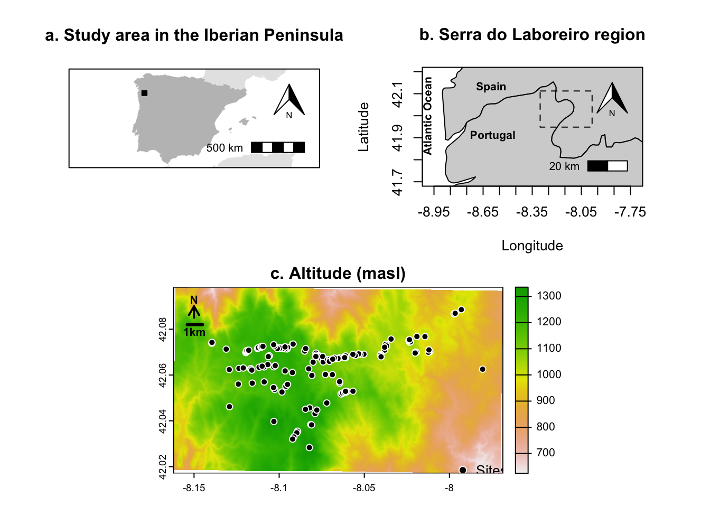
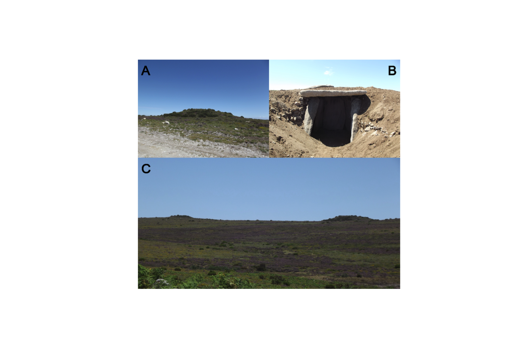
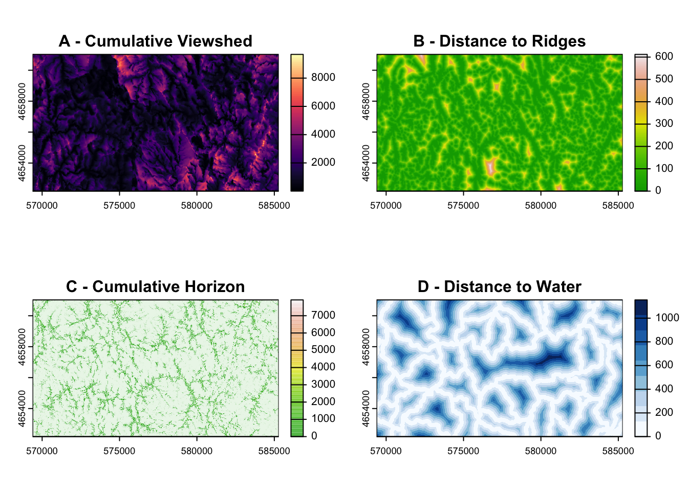
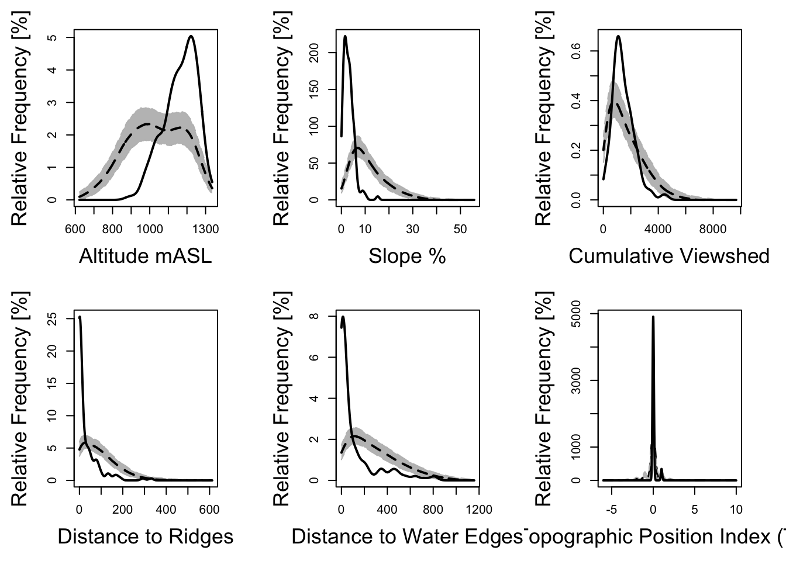
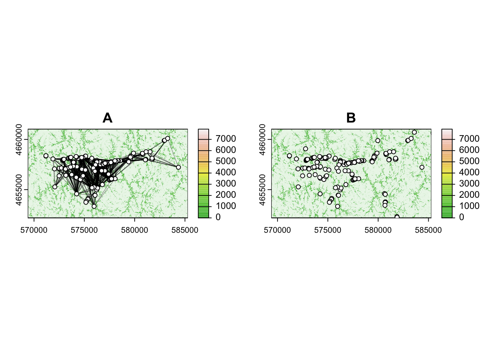
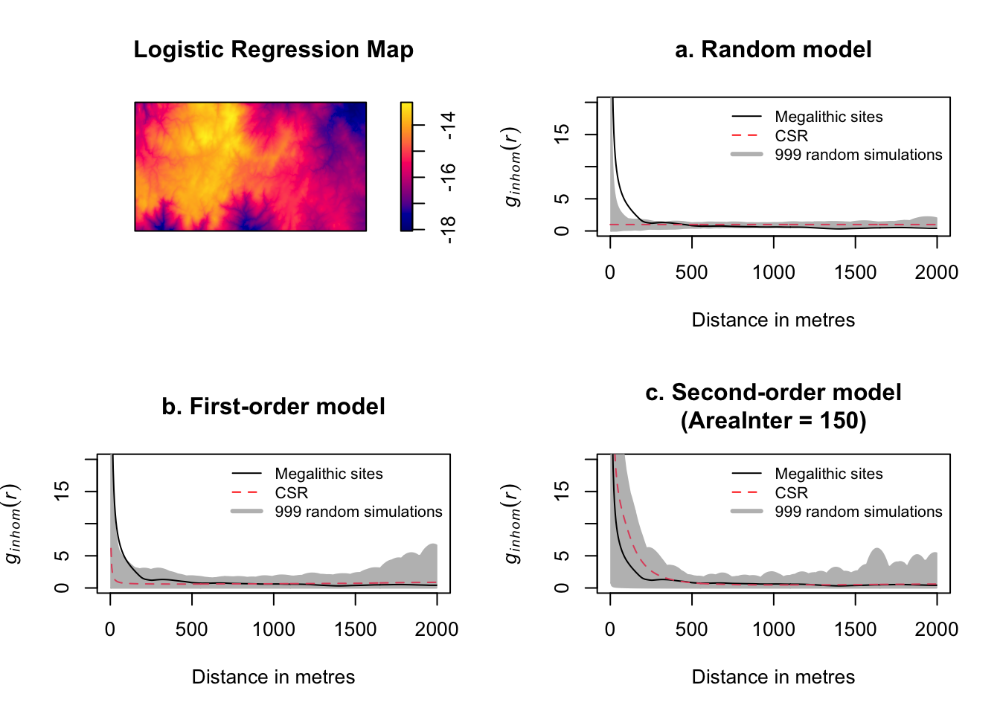

The region encompassing Planalto de Castro Laboreiro (Melgaço, Portugal), Baixa Limia (Ourense, Spain), and its surrounding areas is renowned for its significant concentration of tumular and megalithic sites. Despite the lack of formal excavations for most of the sites, this study employs a landscape archaeology approach supported by spatial statistics to identify possible spatial patterning behind the construction of the megalithic landscape. We tested multiple landscape features that have long been emphasized as having a significant influence on the placement of these monuments within the territory, and present how the geomorphology of the territory acts as both a constraint and social booster in the construction and deconstruction of these multiple spaces over time.
1. Introduction: study area and the context of its megalithic landscape
The regions circumscribing the Northwest of the Iberian Peninsula boast one of the highest concentrations of megalithic sites in Europe. Currently, there are over 10,000 registered tumuli and dolmens in this area (see Scarre, 2018). Amongst this area, Serra do Laboreiro and its surroundings stands out as the area with the most abundant concentrations, situated administratively between Portugal (Alto Minho, Viana do Castelo District) and Spain (Galicia) (Figure 1).
Code
Figure 1.R
# Code for figure 1# Librarieslibrary(sf)library(rnaturalearth)library(terra)library(prettymapr)# Set working directory and pathssetwd("~/Desktop/Laboreiro/")shp_path <-file.path("shp")grid_path <-file.path("grid")# Load spatial datasites <-invisible(suppressMessages(st_read(file.path(shp_path, "sites_lab.shp"), quiet =TRUE) %>%st_transform(4326)))study_area <-invisible(suppressMessages(st_read(file.path(shp_path, "mask.shp"), quiet =TRUE) %>%st_transform(4326)))# Load DEMdem <-suppressWarnings(terra::rast(file.path(grid_path, "dtm.tif")))dem <- terra::project(dem, "EPSG:4326")# Load Iberia basemapiberia <-ne_countries(country =c("spain", "portugal"), returnclass ="sf", scale =10)iberia <-st_cast(st_geometry(iberia), "POLYGON")iberia <- iberia[st_coordinates(st_centroid(iberia))[,"X"] >-10, ]iberia <-st_union(iberia[st_area(iberia) > units::set_units(50000000, "m^2")])iberia <-st_transform(iberia, 4326)franceandorra <-st_cast(st_geometry(ne_countries(country ="france", returnclass ="sf", scale =10)), "POLYGON")franceandorra <- franceandorra[st_area(franceandorra) == units::set_units(max(st_area(franceandorra)), "m^2")]franceandorra <-st_union(franceandorra, st_geometry(ne_countries(country ="andorra", returnclass ="sf", scale =10)))franceandorra <-st_transform(franceandorra, 4326)northafrica <-ne_countries(country =c("morocco", "algeria"), returnclass ="sf", scale =10)northafrica <-st_cast(st_geometry(northafrica), "POLYGON")northafrica <-st_union(northafrica[st_area(northafrica) > units::set_units(50000000, "m^2")])northafrica <-st_transform(northafrica, 4326)andorra <-st_cast(st_geometry(ne_countries(country ="andorra", returnclass ="sf", scale =10)), "POLYGON")andorra <-st_transform(andorra, 4326)iberiaAndorra <-st_union(iberia, andorra)# Panel 1 and Panel 2 in the first row, and Panel 3 in the second row spanning both columnslayout_matrix <-rbind(c(1, 2),c(3, 3))# Set the layoutlayout(layout_matrix)# Panel 1: Plot study areaplot(iberiaAndorra, border =NA, col ="grey75",main ="a. Study area in the Iberian Peninsula") plot(franceandorra, col ="grey90", border =NA, add =TRUE) plot(northafrica, col ="grey90", border =NA, add =TRUE) # Draw a solid rectangle to represent the zoom windowrect(xleft =-8.4, xright =-7.85, ybottom =41.85, ytop =42.25,col ="black",border ="black", lty =1)addnortharrow(scale =0.5)addscalebar(pos ="bottomright")box()# Panel 2. Study area in the Iberian Peninsulazoom_window <-st_sfc(st_point(c(-8.9484, 41.7)), st_point(c(-7.7481, 42.2)), crs =4326)window_coord_sf <-st_coordinates(zoom_window)iberia_nw <-ne_countries(country =c("spain", "portugal"), returnclass ="sf", scale =10)iberia_nw <-st_cast(st_geometry(iberia_nw), "POLYGON")iberia_nw <- iberia_nw[st_coordinates(st_centroid(iberia_nw))[,"X"] >-10, ]iberia_nw <-st_transform(iberia_nw, 4326)## Set up the plot layout and marginspar(mar =c(4, 4, 4, 4))## Plot Iberia map with bounding box (window coordinates)plot(st_geometry(iberia_nw), col ="lightgray", border ="black", main ="b. Serra do Laboreiro region", xlim =c(window_coord_sf[1, "X"], window_coord_sf[2, "X"]),ylim =c(window_coord_sf[1, "Y"], window_coord_sf[2, "Y"]), xlab ="Longitude", ylab ="Latitude", axes =FALSE)## Add custom axis labels for longitude and latitudeaxis(1, at =seq(-8.95, -7.75, by =0.1), labels =TRUE) # Longitude (x-axis)axis(2, at =seq(41.7, 42.2, by =0.1), labels =TRUE) # Latitude (y-axis)## Add labels for Spain and Portugaltext(x =c(-8.6, -8.59), y =c(42.13, 41.91), labels =c("Spain", "Portugal"), col ="black", cex =0.8, font =2)## Draw the dashed rectangle to represent the zoom windowrect(xleft =-8.3015, xright =-7.9843, ybottom =41.9483, ytop =42.1125, border ="black", lty =2,cex=2)## Add the vertical text for "Atlantic Ocean"text(x =-8.99, y =42.0, labels ="Atlantic Ocean", col ="black", srt =90, cex =0.8, font =2)addnortharrow(scale =0.5)addscalebar(pos ="bottomright")box() # add bounding box# Panel 3: DEM with site points# Plot DEMplot(dem, main ="c. Altitude (masl)")# Add site pointsplot(sites$geometry, add =TRUE, pch =21, col ="white", bg ="black")# Adjusted North Arrow Position (moved left)# North Arrow (top-left)arrows(x0 =-8.15, y0 =42.085, x1 =-8.15, y1 =42.09, length =0.1, col ="black", lwd =2)# Add the "N" label for North just above the arrowtext(x =-8.15, y =42.093, labels ="N", cex =0.8, font =2)# Small Scale Bar (just below the arrow)# Define the start and end points for the scale barscale_start_x <--8.154scale_end_x <--8.145scale_y <-42.082# Draw the scale bar with tick markssegments(x0 = scale_start_x, y0 = scale_y, x1 = scale_end_x, y1 = scale_y, col ="black", lwd =3)# Add scale text below the scale bar (e.g., "1 km")text(x =-8.1497, y =42.0789, labels ="1km", cex =0.8, font =2, col ="black")# Add a legend for the site points (centered on the plot)legend(x =-8, y =42.03, # Adjust x and y coordinates for the legend positionlegend ="Sites", pch =21, pt.bg ="black", pt.cex =1.2, # Adjust point size if neededcol ="white", bty ="n", # No border around the legendcex =1) # Adjust font size of the legend

Figure 1. The geographic positioning of the Serra do Laboreiro region within the Iberian Peninsula (above), and study area with the selected megalithic monuments (black dots).
Knowledge on the tumular phenomenon at the Portuguese-Galician frontier remains somewhat sparse even considering decades old continuous studies of some areas in the northwest of the Iberian Peninsula. Several efforts coming from Spanish and Portuguese universities, such as the University of Santiago de Compostela (e.g. Eguileta Franco, 1999), the Archaeological Unit of the University of Minho or the Group of Archaeological Studies of Porto (GEAP – Grupo de Estudos Arqueológicos do Porto), jointly with the efforts by the regional governments, such as Xunta de Galicia, were put forth in the decades between 1978 until circa 1992 to survey the territories in the north of Portugal and south of Galicia. Those works resulted in the creation of new site and monument records for the area.
Amongst the most debated, surveyed and excavated megalithic group in the Iberian Northwest remains Serra da Aboboreira (Porto, Portugal) (Cruz, 1980, 1992; Jorge, 1982a, 1983-84, 1992), Trás-os-Montes and the entire region of Entre Douro e Minho (Portugal) (Jorge, 1987; Silva, 2003; Sanches & Nunes, 2005; Bettencourt & Vilas Boas, 2021), with Planalto de Castro Laboreiro (shared between Portugal and Galicia) (López Cuevillas, 1923, 1925a, 1925b; 1973), and the region of Baixa Limia (Ourense) (Eguileta Franco, 1993-94, 1995) with important concentration of prehistoric sites as early as the 5th millennium BC. In Galicia, Costa da Morte appears to be one of the regions with the highest density of sites, as several researchers have pointed out (e.g. Carrero-Pazos Rodríguez Casal, 2019).
In the case of Serra do Laboreiro, the continuous surveys and field prospections went from the identification of 64 monuments to circa 200 (Jorge, 1982: 421; Sousa, 2012; cfr: Canedo et al. 2023), reaching, today, a little bit over 1,000 registered monuments for the north of Portugal only1. However, although there are, indeed, over 1,000 entries in the current national database – Geoportal de Arqueologia do Património Cultural, I.P. (https://arqueologia.patrimoniocultural.pt/)-, there is a need for an intensive revision, as some sites may have more than one entry under different identifications or names. In this aspect, a remote identification has its limits, something that is being constantly underlined, stating how indispensable conducting thorough fieldwork validation continues to be - and despite the refinement of AI algorithms (see Canedo et al. 2023, 2024).
Only Serra da Aboboreira and its neighbouring mountain, Serra do Castelo, were excavated, published, and studied to their maximum during the 1980s and beginning of the 21st century, leaving us a layout for the study of these types of ancient social and territorial contexts. Despite this, the number of monuments is not enough to understand the phenomenon, some defending it even creates a somewhat fragmentary knowledge of it (Jorge, 1987: 270), specifically for the north of Portugal, as we rest mostly on the knowledge of one necropolis. That is not to say that the only source of knowledge for this type of contexts rests solely on one example, rather it is the only one where information can be derived out of one single landscape with approximately 40 (excavated) monuments instead of a small group of them. In fact, if there is something that Serra da Aboboreira underlined was that the tumular phenomenon/tumular landscapes is to be regarded as a heterogenous and polymorphic behaviour (see Jorge, 1981; Fábregas Valcarce, 1988: 280), whose background rests behind a multitude of social layouts and variables – most of which unknown or poorly understood – which stretch over a large chronological space.
As previously mentioned, amongst the most well-known tumular landscapes rests Planalto de Castro Laboreiro and its surrounding areas, and the Galician region of Baixa Limia including Maus de Salas, with 269 identified barrow-like structures, some of which identified in the last decades of the 20th century, others inedited and recently added to the database. The monuments are located at altitudes ranging from 1300 m.a.s.l. and 700 m.a.s.l. (Figure 2).
Code
Figure 2.R
# Load librarylibrary(magick)# Define directory pathdir_path <-"/Users/miguelpazoscarrero/Desktop/Laboreiro/images/"# Load imagesimg1 <-image_read(paste0(dir_path, "OFeM1.JPG"))img2 <-image_read(paste0(dir_path, "OFeM3_Dolmen.JPG"))img3 <-image_read(paste0(dir_path, "Landscape.JPG"))# Set the target width for the full compositiontarget_width <-800# Resize the top images so that they add up to the target widthimg1 <-image_resize(img1, paste0(target_width /2, "x")) img2 <-image_resize(img2, paste0(target_width /2, "x"))# Resize the bottom image to match the target widthimg3 <-image_resize(img3, paste0(target_width, "x"))# Add labels "A", "B", and "C" correctlyimg1 <-image_annotate(img1, "A", gravity ="northwest", location ="+10+10",size =40,color ="black", strokecolor ="black")img2 <-image_annotate(img2, "B", gravity ="northeast",location ="+10+10",size =40, color ="black", strokecolor ="black")img3 <-image_annotate(img3, "C", gravity ="northwest",location ="+10+10",size =40, color ="black", strokecolor ="black")# Combine the first row (OFeM1 and OFeM3_Dolmen)top_row <-image_append(c(img1, img2), stack =FALSE)# Merge both rows vertically (top row + full-width bottom image)composition <-image_append(c(top_row, img3), stack =TRUE)# Display the final imageplot(composition)

Figure 2. Megalithic sites from Serra do Laboreiro. Photographs by Goreti Sousa (Sousa, 2012).
Most of these groups of tumular monuments remain to be excavated. The inner structures encased by the earthen barrows may refer to megalithic chambers like dolmens, or cists, each case referring to particular periods; the very own structural layout of some of the first ones (open dolmens, closed dolmens, dolmens with corridor, megalithic cists) (see Criado Boado & Valcarce, 1989: 688, 692) seems to suggest different timelines not too distant chronologically, as some already suggested (López Cuevillas, 1973; Rodríguez Casal, 1979; Cruz, 1992: 69-72).
The life tempo of some of these monuments – from their construction to abandonment and posterior reuse - stretches in time to such an extent that it becomes challenging to determine concrete phases of interaction with the monument when we want to go beyond the simple determination of a beginning and an end (which, in itself, is not “simple” regarding the invisibility of artefactual and material record and samples for dating). For most of these cases we can mostly consider their landscape framework, i.e., since we are dealing with a space-related phenomenon, there are associations we can reflect upon, particularly the relationship between humans and their landscape.
Given that this phenomenon brings the novelty of space demarcation through the construction of funerary structures (Renfrew, 1973, 1976; Díez Castillo 1996: 32; Murrieta-Flores, 2012), and since there are many aspects of their builders’ intentions and cultural backgrounds we cannot know for sure, there are common characteristics in terms of territorial display that allude to the criteria used for their construction (something also extensively studied in the Gor necropolis, in Granada; see e.g. Esquivel et al., 2022; Cabrero González et al. 2025).
Natural elements in the landscape as well as geomorphological features act as those criteria of choice (e.g. Villoch Vázquez 1995; Criado Boado, Villoch Vázquez 2000; García Sanjuán 2008; Blas Cortina 2010), some of which may even rest on aspects of a cultural basis or even a pragmatic nature. We take into consideration the timeline in which this phenomenon first appears and the socioeconomical implications associated with them, meaning, human groups still somewhat mobile, and the first indications of a producing lifestyle - in some places, still very much incipient - coupled with pastoralism and hunter-gatherer activities (Díez Castillo 1996; Fábregas Valcarce & Vilaseco Vásquez, 2006: 2).
The ways of assessing these elements come from a crescent improvement in digital tools from fields such as Geographical Information Systems, Artificial Intelligence and Spatial Statistics, as well as a renovated interest in their application in current archaeological science (Bevan, 2015; Cortell-Nicolau & Pardo-Gordó, 2023). In fact, the importance space holds over humans did not go by unnoticed during earlier studies on these specific monuments (albeit the focus during field works remained towards the obvious parts of the structure – the chamber, corridor, etc.). The most obvious and debated elements relate to the structures’ closeness to rocky outcrops (e.g. L’ Helgouac’h, 1965; Bueno Ramírez, 1988; Criado Boado & Grajal, 1981; Criado Boado, 1984: 9-10; Catela, 2020: 91;), natural passageways (Criado Boado, Vaquero Lastres, 1991; García Sanjuán et al. 2009; Cabras, 2018; Murrieta-Flores, 2012, 2014, Llobera, 2000; Carrero Pazos, 2017: 137; Rodríguez Rellán & Fábregas Valcarce 2019), proximity to water bodies (Tilley, 1994: 67, 123; O’Sullivan, 2011: 65) and to arable lands (Criado Boado & Grajal, 1981: 23; Bello Diéguez et al. 1982), to which we can add the (inter)visibility and topographic prominence (Criado Boado, 1984: 14, 1988: 669; Cabrero González et al. 2020).
Based on this research background, in this case study we use some of the variables that best account for the location of the megalithic sites, such as altitude, slope, cumulative viewshed, distance to rocky outcrops and the main landscape features, the hydrographic basins and natural pathways. Given the strict relation their construction seems to have with the territory throughout the centuries, a spatial statistical analysis seems the best fit to deal with the lack of information from direct interventions.
2. Methods and analyses
2.1. Spatial Statistics
The potential of statistical methods and GIS in archaeology has been extensively explored and documented thus far. This is particularly noteworthy, given the advancements in digital tools and technological improvements that have characterized the last two decades (see e.g. Mehrer & Wescott, 2006; Carlson, 2017; Verhagen, 2018;Gillings, Hacigüzeller & Lock, 2020). Archaeologists have eagerly embraced new techniques to assist in establishing methods for interpreting records and organizing data. Similarly, the application of practical and digital methods has surged, in line with new theoretical hypotheses (Hu, 2011; Gillings, 2012).
The ones highlighted in this text arise amidst the tumular phenomenon debate and regard those main territorial attributes or elements from a (tumular) landscape, i.e., a study on a regional scale of a set of monuments in a mountain environment. As most of the monuments have no information from excavations, the study focuses essentially on direct and observable territorial attributes of the relation between the megalith’s setting and their surroundings.
Studies on landscape archaeology based on Spatial Statistics are not new in the Iberian Peninsula (see e.g. Parcero Oubiña & Fábrega Álvarez, 2006; Yubero-Gómez et al., 2015; Berrocal-Rangel et al., 2018; Rubio Campillo et al. 2022; Carrero-Pazos, Bevan & Lake, 2019; Díaz Rodríguez & Fábregas Valcarce, 2022), and the potential they pose proves to be of great utility especially when confronted with case studies that lack formal and direct evidences. However, their application on tumular landscapes is still somewhat incipient, with greater incidence in the Iberian Northwest (Llobera, 2015; Carrero-Pazos et al., 2020; Higginbottom et al., 2022; Berganzo-Besga et al., 2021; Rodríguez del Cueto & Carrero-Pazos, 2021) and the South (Murrieta-Flores, 2012, 2014). Despite the variety of methods used in these analyses and the observation of point distributions and spatial interactions between them, several courses of action may be considered based on the specificities of the study area and the questions to be answered.
We know that behind these monuments rests a multitude of different behaviours extended over large periods of time. From previous readings, be them before or after the introduction of computational approaches, we can also positively assume some de facto aspects: (i) the monuments may occur in the landscape in clusters or isolated, and (ii) may represent distinct chronologies, therefore, we can also positively assume that (iii) the existence of previous monuments is a factor of influence for the construction of new structures in later periods (Carrero-Pazos et al. 2019). Consider, for example, Outeiro de Gregos in Serra da Aboboreira (Portugal), a cluster of five monuments ranging from the beginning of 4th millennium BCE, to the 2nd millennium BCE (Jorge, 1981), or even the Necropolis of Lafões in Viseu (Portugal), a cluster of circa 114 monuments also ranging from the beginning of the 4th millennium until the XII-VII century BCE (Carvalho & Carvalho, 2018: 41).
2.2. Archaeological data. Ground truthing through LiDAR data
The study area is in the frontier territories over Ourense province (Galicia, Spain) and the Melgaço municipality (district of Viana do Castelo, north of Portugal). The archaeological data used in this work is the result of several fieldwork campaigns that some of the authors did in the past (e.g., Vilas Estévez, 2015) and current revisions from AI approaches (Canedo et al. 2023, 2024).
For this work, we decided to carry out a ground truthing initial phase based on LiDAR data to check the reliability of the spatial coordinates of the sites. As such, the generation of the DEM and its pretreatment is the first unavoidable step for the entire analytical process and through which all the other variables will be modelled from (see Berganzo-Besga et al., 2022). For this, we used the available LiDAR data for Spain (Geographical National Institute, IGN - https://pnoa.ign.es/pnoa-lidar/presentacion), and for Portugal the LiDAR data was obtained from the Comunidade Intermunicipal do Alto Minho (CIM Alto Minho), under the collaboration by one of the authors of this paper (JF).
The provided LiDAR data has a point cloud density of 2 points per square meter for the Portuguese part. For the Spanish (Galician) part, the LiDAR data has a point cloud density of 0.5-2 points per square meter (see https://pnoa.ign.es/web/portal/pnoa-lidar/especificaciones-tecnicas).
The DEM was created using LAStools, keeping only the bare ground points with the plug-in lasground. The resulting point clouds were merged in SAGA- GIS 8.5.0, and the resulting raster was interpolated through Angular Distance Weighting (ADW) (Shepard, 1968). We decided to use ADW instead of the more common Inverse Distance Weighting (IDW), in this case, for the sake of computer efficiency. The interpolation resulted in a DEM with a 1m resolution.
This cleaning process permits for the better observation of the terrain with no other categories but the terrain itself, which makes easy the visual identification of the megalithic mounds (Opitz & Cowley, 2013). The ground truthing step required for the terrain observation and confirmation of the tumular occurrences, involved the generation of a Hillshade from the DEM and other raster visualization techniques (see Berganzo-Besga et al., 2021; Berganzo-Besga et al., 2022). In this way, we used the Relief Visualization Toolbox (RVT) (Zakšek, Oštir & Kokalj, 2011; Kokalj & Somrak, 2019) to create other convenient visualization outputs, such as the sky-view factor or a local relief model (Kokalj & Hesse, 2017). We also used the Resampling filter from SAGA GIS, creating additional images with distinct categories in colour and shading that, when compared against the generated hillshade, helped us with the site’s identification. The ground truthing process took into consideration an initial database of 269 points corresponding to monuments identified in field surveys, either from previous prospections or more recent ones (Eguileta Franco 1999; Sousa, 2012; Vilas Estévez 2015). The database we are providing comprises the name of the monument and the UTM coordinates – easting and northing.
To carry out the ground truthing we used ArcGIS where a point shapefile was created and used against the generated raster images. The points typically contrast with the shapes seen in the images aiming to confirm the correct georeferentiation of the monuments during the fieldwork, confirming both a correct identification and a remote LiDAR successful detection. This second step on the process generated a total of 178 points, meaning that 91 monuments were excluded from the ground truthing process according to the chosen parameters: 46 duplicated points from previous databases with monuments registered under two distinct identifications, and 45 points whose remote identification as mounds is dubious and the in-site recognition is not known.
2.3. GIS modelling. Covariable set up
The main landscape features previously mentioned are those that have been addressed by different authors as possible predictive variables of the megalithic mounds in Galicia and other regions (see the introduction chapter). Thus, in the case of this research, a data-driven model (Verhagen, 2018) reflects more accurately the factors we have at hand: altitude, slope, distance to main geomorphological features and water sources, etc.
Therefore, several digital models were created from the DEM, according to the variables previously discussed: Slope, Cumulative Horizon, Cumulative Viewshed, Distance to Ridges, Distance to Water Edges, Distance to Rocky Outcrops, Least Cost Paths and Topographic Prominence. Distinct programs were used to create and define the raster covariates: ArcGIS 10.4, SAGA- GIS 8.5.0, Grass GIS 7.8, GIS 3.28 Firenze, and R Studio v. 4.3.0.
Slope
ArcMap, using the Surface in Spatial Analyst Tool
Cumulative horizon
QGIS 3.28 Firenze through the Visibility Analysis plugin (Čučković, 2016)
The intent was to model the horizon of the landscape, meaning the outer edges of a viewshed. 1,000 viewpoints where regularly generated and evenly distributed beforehand alongside the entire study area to cover the total landscape under analysis.
Cumulative viewshed
QGIS 3.28 Firenze. Similarly to the previous variable, we used the visibility index analysis from the Viewshed Analysis plugin (Čučković, 2016)
1,000 viewpoints were generated across the entirety of the study area, a radius of analysis of 3,000 meters and an observer height of 1.60 meters. The Visibility Index considers the proportion of a given area that is visible from a given observer location, attributing different values to raster cells considering the higher or lower degree of visibility, useful when the objective is the identification of areas in the landscape with the best visibility index.
Distance to ridges
GRASS GIS with r.geomorphon. It allows to calculate, classify and map the terrain elements from a DEM (Jasiewicz & Stepinski, 2013).
The objective was to identify the main terrestrial landforms in the study area through the generation of geomorphometric maps and extract the ones that appeared to be of significance to our analysis. To identify the main terrestrial landforms, several maps were generated according to different scales and radius. Five scales were tested:
Outer radius = 20, inner radius = 5
Outer radius = 15, inner radius = 5
Outer radius = 35, inner radius = 0
Outer radius = 32, inner radius = 0
Outer radius = 64, inner radius = 5
It is important to emphasize that the primary goal in defining the main landforms in the study area is closely related to identifying distinct shapes in the geomorphology, meaning, the main scenery cut against the horizon and the sky – things that can be easily recognized while traversing the landscape. Based on this, the critical visual analysis of the results determined that a radius of 64 units captured the key points in the landscape, enabling a faster identification of the main landforms. Therefore, among the 10 categories defined in r.geomorphon, ridges, shoulders and spurs (categories2, 3, and 4 respectively) showed to be the most promising. The raster calculator (r.mapcalc)allowed for the extraction of these specific landforms, so the final result was a raster file with information that regarded solely to landform categories 2, 3 and 4. Lastly, and because we want to ponder on the distance between specific points in the landscape, we applied used r.grow.distance todetermine the distance between the features in the landscape.
Distance to watershed edges
GRASS GIS with r.watershed (original version by Ehlschlaeger, 1989).
To calculate the watershed edges we used hydrological modelling, which calculates flows and basins in a DEM by generating a series of maps according to different parameters: flow accumulation, drainage direction, location of streams, watershed basins. Our variable, however, considers only watershed basins. As it requires a minimum size of the exterior watershed to be set, we tested two sizes: a threshold of 50000 units and 25000 units. A visual analysis concluded that a threshold of 25000 showed more detailed results, outlining specific watershed basins. R.grow.distance was then used to calculate the distance from the watershed edges to the rest of the study area.
Distance to rocky outcrops
ArcMap, with the creation of a shapefile and drawing polygons against the satellite images for Spain (Plan Nacional de Ortofotografía Aérea (PNOA) https://pnoa.ign.es/) - and Portugal (Direção Geral do Território - DGT, Ortofotos 25cm – Portugal Continental - 2018)
This variable required a bit more elaboration, as currently there is not any vector cartography that we can use. The raster geological maps available from the Spanish and Portuguese Geographic National Institutes were too general to be used. Thus, the creation of the variable implied a vectorization of all the rocky outcrops visible in aerial imaging though a Web Map Service. Again, r.grow.distance was applied to determine the distance between the rocky outcrops and the rest of the terrain.
Topographic prominence
A TPI Based Landform Classification from SAGA GIS (based on Conrad, 2011, 2016) was first applied to measure slope positions and automate the landform classifications, with a small scale of 500 and large scale of 1,000
It follows the assumption that the topography of the terrain where the monuments were built is of a major influence. One of the algorithms widely used for this purpose is usually the Topographic Position Index (TPI) from SAGA GIS (e.g. Bustelo Abuín et al. 2017), which takes into consideration the relative topographic prominence of a feature in the landscape at different scales and integrates it into a single grid. As the output is highly dependable on scales (Weiss, 2001), the characteristic of the landscape needs to be considered not only counting the landscape under analysis, but also the objectives under scrutiny. So, we must model this variable considering this landscape’s characteristics, which in this case is mainly constituted by open slopes and plains.
As different landscapes have different geomorphological features, some digital models should be generated in accordance with said features. This is particularly true for this variable that considers topographic prominence, as it is scale dependent. Thus, we used the Multiresolution Index of Valley Bottom Flatness (MRVBF) and the complementary Multiresolution Index of the Ridge Top Flatness (MRRTF) to define valley bottoms as areas which were flat and low relative to their surroundings (Gallant & Dowling, 2003: 9). As both open slopes and plains are characterized by flat terrain and low to gradual slope angles, we determined a value of 18 for the Initial Threshold for Slope, a Shape Parameter of Slope of 2, and a Shape Parameter for Elevation Percentile of 1, leaving the remaining parameters with their default setting. Then, the determination of the surface and flat areas was determined by the initial threshold: the higher the value, the flatter the surface.
We include some of the modelled covariates in the figure 3.
Code
Figure 3.R
# Load required librarieslibrary(terra)library(viridis)# Define the directory path (modify according to your directory)dir_path <-"/Users/miguelpazoscarrero/Desktop/Laboreiro/grid/"# Load rastersrast_A <-rast(paste0(dir_path, "cum_viewshed.tif"))rast_B <-rast(paste0(dir_path, "dist_to_ridges.tif"))rast_C <-rast(paste0(dir_path, "cum_horizon.tif"))rast_D <-rast(paste0(dir_path, "dist_to_wat_edges.tif"))# Create a custom palette for plot C (Cumulative horizon)create_transparent_palette <-function(colors, alpha_values) { rgb_values <-col2rgb(colors) /255apply(rgb_values, 2, function(col) {rgb(col[1], col[2], col[3], alpha = alpha_values) })}# Generate a terrain-like color palette with transparencyn_colors <-100terrain_colors <-terrain.colors(n_colors)alpha_values <-seq(0.1, 1, length.out = n_colors)transparent_palette <-create_transparent_palette(terrain_colors, alpha_values)# 2x2 plotting layoutpar(mfrow =c(2, 2), mar =c(4, 4, 2, 2))plot(rast_A, main ="A - Cumulative Viewshed", col =magma(100))plot(rast_B, main ="B - Distance to Ridges", col =terrain.colors(100))plot(rast_C, main ="C - Cumulative Horizon", col = transparent_palette)plot(rast_D, main ="D - Distance to Water", col = blues9)

Figure 3. Some of the variables modelled in a GIS environment for this work.
3. Descriptive approaches to the distribution of sites
The study of barrow landscapes considers looking into patterns that could refer to similarities in the dimensions of the mound and/or chamber, existence/absence of corridor, type(s) of material culture or presence/absence of remains, or even megalithic art. These similarities could be then compared between 1) the geomorphological and topographical features, and 2) the characteristics of the structure’s implantation in the terrain – both at a macro and micro scale2. But of course, this can only be done when we have access to data referring the structures themselves, and their respective material cultural, stratigraphy, and not just their spatial context.
On the existence of a pattern, we could be dealing with a certain type of human group or observing a certain behaviour that could, in turn, be chronologically (or even socially) narrowed. Cases where this can be done are not so common (see, for example, Esquivel et al., 2021, 2025, stressing the tumular landscape alongside the Gor River, Granada), as one would need a landscape fully excavated, without the general absence in artefactual evidence, as well as chronometric data.
Another important constriction is that we lack knowledge on some factors of social and cultural order in prehistoric times (especially when we confront the data for 5th and/or 4th millennium with the data for the 3rd and end of 2nd millennium), such as demographic growth, territorial disposition, and organization, etc. So, it becomes even more difficult when we try to conduct a study based solely on a point distribution.
It becomes important to clearly define what we can observe from it considering these unknowns – which, in the context of the present text, has to start and end strictly with a spatial and very much digital and bibliographical approach.
As an example on how some obstacles can be accounted for, let´s, for instance, consider Tobler’s First Law of Geography which states that nearby elements tend to have stronger relationships than those farther apart. In terms of this paper’s main objective – long-term human-landscape behaviour through the analysis of a non-random, clustered distribution of points - this means we can analyse it from two perspectives (and similarly to how G. Čučković forwarded it (Čučković 2024: 234, table 15.1.)):
On a large scale, that is, looking at how natural landscape features influence human movement within an environment.
On a small scale, that is, observing how individual monuments, our points, interact with each other.
Essentially, this allows us to move from broad spatial relationships to more localized ones. These reflect two levels of influence considering we’re essentially dealing with human behaviour strictly from a spatial point of view: the landscape, while perceived and shaped by humans, is also subjecting humans to its geomorphological constraints, so there will always be a limit to how we can use a territory. Consequently, there’s a limit on how we can quantify these several strategies implemented by people over the long diachrony.
Several approaches can be used to quantify these relations, such as Moran’s I Method, or the application of nonparametric estimations (rho-hat function, see Kempf, Günther, 2022). In this case we will opt for the widely used comparative approach between the site locations and a sample of the background terrain, based on multiple Monte Carlo Simulations, with the implementation of a Mann-Whitney test to formally test whether the site locations were likely a random sample of locations drawn from the study area or not (see Connolly, Lake 2006; Bevan et al. 2013; Bevan, 2020). This can be done in R Statistics by using the rbias package (Kempf, Günther, 2022), with implementations from K. Bocinsky (2017), by calculating and graphing a Monte Carlo sub-sampled kernel density estimates for random locations over which we can include the sites specific trends (Figure 4).
Code
Figure 4.R
# Load required packagesspatpack <-c("sf", "terra", "spatstat", "plotly", "foreach", "dplyr", "progress", "purrr", "reshape2", "broom")invisible(lapply(spatpack, require, character.only=TRUE))# Define working directoriesgrid <-file.path("grid")shp <-file.path("shp")# Define the coordinate reference system (CRS)crs <-"+proj=utm +zone=29 +ellps=GRS80 +towgs84=0,0,0,0,0,0,0 +units=m +no_defs"# Read sites and study areasites <-invisible(suppressMessages(st_read(file.path(shp_path, "sites_lab.shp"), quiet =TRUE) %>%st_transform(4326)))# Read covariates using terradem <- terra::rast("grid/dtm.tif")slope <- terra::rast("grid/slope.tif")cum_horizon <- terra::rast("grid/cum_horizon.tif")cum_viewshed <- terra::rast("grid/cum_viewshed.tif")dist_to_ridges <- terra::rast("grid/dist_to_ridges.tif")dist_to_rocks <- terra::rast("grid/dist_to_rocks.tif")dist_to_watedges <- terra::rast("grid/dist_to_wat_edges.tif")tpi <- terra::rast("grid/tpi.tif")# Part 1: Calculate and plot kernel density estimates with Monte Carlo subsampling# Compare the sites with the covariatessource('r_functions/rbias_sitesVSbackground.R')source('r_functions/rbias_simulationresults.R')# Create a function to iterate the simulation processperform_simulation <-function(covariate, covariate_name) { simulation_result <-sites_vs_background(covariate = covariate,sites = sites,nsim =999,covariate_name = covariate_name)return(simulation_result)}# Define a list of covariates and their corresponding namescovariates <-list(dem ="Altitude mASL", slope ="Slope %",cum_viewshed ="Cumulative Viewshed",dist_to_ridges ="Distance to Ridges",dist_to_watedges ="Distance to Water Edges",tpi ="Topographic Position Index (TPI)")# Apply the simulation function to each covariatesimulation_results <-lapply(names(covariates), function(covariate) {perform_simulation(get(covariate), covariates[[covariate]])})# Plotpar(mfrow =c(2, 3), mar =c(5, 5, 2, 3))for (i inseq_along(simulation_results)) { simulation_result <- simulation_results[[i]]if (!is.null(simulation_result)) {# Create the plot using simulation_results_plot()simulation_results_plot(simulation_result, show_title =FALSE) }}

Figure 4. Site trends versus the terrain background. The solid line in the graphs represents the sites; The dashed line corresponds to the median of the random points; The shaded area is the confidence intervals (5%, 95%) based upon 999 Monte Carlo Simulations placed over the study area (based on Kempf, Günther, 2022; Bocinsky, 2017).
Code
# Part 2 Compute two-sample Wilcoxon tests (Mann-Whitney U tests)# Generate random background samples for each covariaterandom_samples <-lapply(simulation_results, function(simulation_result) {if (is.null(simulation_result)) return(NULL) ras_samples <- simulation_result$ras_sampleslapply(ras_samples, function(ras_sample) {sample(ras_sample, length(simulation_result$sites_densities$Covariate), replace =TRUE) })})# Create a progress barpb <- progress_bar$new(total =length(simulation_results), format ="[:bar] :percent :eta")# Perform Wilcoxon test for each covariatewilcoxon_results <-lapply(seq_along(simulation_results), function(i) { simulation_result <- simulation_results[[i]] background_samples <- random_samples[[i]]if (is.null(simulation_result) ||is.null(background_samples)) {return(NULL) }# Update progress bar pb$tick()# Perform Wilcoxon test for each background sample wilcoxon_test_results <-lapply(background_samples, function(background_sample) {if (length(background_sample) <2||length(simulation_result$sites_densities$Covariate) <2) {return(data.frame(statistic =NA, p.value =NA)) } result <-wilcox.test(simulation_result$sites_densities$Covariate, background_sample, alternative ="greater", exact =FALSE) broom::tidy(result) %>%select(statistic, p.value) })# Combine the results wilcoxon_test_results <-bind_rows(wilcoxon_test_results)# Get the median test statistic and 95% confidence interval wilcoxon_summary <- foreach::foreach(prob =c(0.025, 0.5, 0.975), .combine = rbind) %do% { wilcoxon_test_results %>% dplyr::summarise_all(quantile, probs = prob) } %>%t() %>% magrittr::set_colnames(c("Lower CI", "Median", "Upper CI"))# Create a data frame for the covariate and add covariate_name covariate_summary <-data.frame(covariate =names(covariates)[i]) wilcoxon_summary <-cbind(covariate_summary, wilcoxon_summary)return(wilcoxon_summary)})# Combine the results for all covariateswilcoxon_results <-do.call(rbind, wilcoxon_results)wilcoxon_results
The Mann-Whitney test, commonly referred to as Wilcoxon rank-sum test, is a non-parametric test used to observe and compare two independent groups, assessing if there is or not a statistically significant difference between the distribution of a variable in said independent groups. In this case, this translates to whether there is a statistically significant difference between the points distribution – the tumular structures – and the geomorphological constraints that were modelled, tested against a set of randomly generated points alongside the study area via 999 Monte Carlo simulations (Conolly & Lake, 2006: 127; Kvamme, 2020: 218; Günther, et al. 2022; Bocinsky, 2017).
The usefulness in using this method relies on the fact that it is not dependent on previous assumptions about the underlying data distribution. Our chosen confidence level was defined at 95%, with a p-value below 0.05. A value under that threshold represents a statistically significant difference between the real sample and random sample. We also include the U Statistic, a confidence interval which allows us to quantify the difference in ranks between the archaeological sample and a random one, that mean in our case, the ranks of the covariate values at site locations versus those at random background locations. The results are provided in the supplementary material (under csv folder).
We can forward that, of all the 8 variables that were modelled – Altitude, Slope, Cumulative Horizon, Cumulative viewshed, Distance to Ridges, Distance to Water Edges, Distance to Rock Outcrops, Topographic Prominence – only Altitude seems to possess a considerate level of significance for Laboreiro’s distribution.
4. Laboreiro’s spatial structure based on the monuments
We’ve established that these points — whether in clusters or isolated — might be representing distinct (social)landscapes at different times. But, by analysing them together with these digital methods we end up merging different landscapes into one, and we overlook the true diversity and dynamism of this territory. Our main challenge, then, becomes: how do we account for the fact that these methods and tests inherently treat a landscape that has evolved over time as if it were static and unchanging?
So, it comes with no surprise that, at least one variable – altitude – stands out as the most important one statistically. This can be translated to “altitude prevailed as a variable of transversal importance for many centuries in association with this phenomenon”.
The glimpses of other human choices lie in the other slightly less statistically relevant variables, perhaps precisely in response to the already established relation with altitude and mountain environments and the many adaptations said relations took throughout the centuries.
It is important to separate the two: what the statistical results say in opposition to what it means in terms of human interpretation of the terrain. And here lies the basis in understanding Laboreiro’s true spatial structure. So, even though the variable representing altitude was revealed to be the most important one, there are, indeed, points of significance denoted by the variables of cumulative horizon, distance to ridges, rock outcrops and watershed edges, and these appear to be the ones showcasing the main spatial tendency and/or the main geomorphological features these several people had to play and compromise with.
The placement of these monuments was a choice as cultural, social, or symbolic, in as much it was a response to geomorphological constraints, which ultimately shaped the way the landscape was socially constructed – a truly quasi-symbiotic relation with space and natural shapes.
So, with the altitude variable, we are observing a concentration of monuments that were implanted from 800mASL up until 1200mASL, thence, this is the variable that defines the pattern within these heights for the totality of the study area initially proposed. But we can also see that there’s also a significant mark between the 400-600mASL.
Visibility will also always remain an important and unavoidable aspect when crossing any territory. The results of those two variables (Cumulative Viewshed and Horizon) might not have been as promising as expected due to this high level of structural heterogeneity that couldn’t be modelled (out of lack of formal data). So, if the altitude is being deemed as the main feature for this distribution, it becomes understandable why the horizon and the ridges are diverting some attention as well. Lines in the horizon will always be visible elements, and they can articulate how a territory can be perceived, manipulated and managed (and even how to socially and culturally limit it). The same goes for drainage divides or even the distance to sources of raw materials.
In terms of point distribution — specifically the placement of monuments — it is reasonable to assume that some monuments, perhaps the earliest ones, played a defining role in shaping how the landscape was later organized. These initial structures may have influenced and constrained how subsequent communities engaged with the territory, whether by reinforcing existing spatial patterns or deliberately rejecting them. In this way, monument placement not only reflected but also actively shaped the way people perceived, used, and interacted with the landscape over time.
And we started noticing that only a portion of the chosen study area, and only a portion of those 178 points is truly demarcating these aspects. We tested this hypothesis by conducting a simple test considering the entirety of the study area and all the points against the Cumulative Horizon raster variable (Fig. 5), by using a simple Intervisibility Network Analysis in QGIS v. 3.28 (see Čučković, 2024: 230-247).
Code
Figure 5.R
# Load librariesspatpack<-c("terra","viridis", "sf")invisible(lapply(spatpack, require, character.only=TRUE))# Set working directorysetwd("~/Desktop/Laboreiro/")shp_path <-file.path("shp")# Load rastersrast <-rast(paste0("/Users/miguelpazoscarrero/Desktop/Laboreiro/grid/","cum_horizon.tif"))# Load shapefilessites_lab <-invisible(suppressMessages(st_read(file.path(shp_path, "sites_lab.shp"), quiet =TRUE)))sites_all <-invisible(suppressMessages(st_read(file.path(shp_path, "sites_all.shp"), quiet =TRUE)))intervisibility <-invisible(suppressMessages(st_read("/Users/miguelpazoscarrero/Desktop/Laboreiro/shp/intervisibility_sites.shp", quiet =TRUE)))# Generate a terrain-like color palette with transparencycreate_transparent_palette <-function(colors, alpha_values) { rgb_values <-col2rgb(colors) /255apply(rgb_values, 2, function(col) {rgb(col[1], col[2], col[3], alpha = alpha_values) })}n_colors <-100terrain_colors <-terrain.colors(n_colors)alpha_values <-seq(0.1, 1, length.out = n_colors)transparent_palette <-create_transparent_palette(terrain_colors, alpha_values)# Plot figure 5 par(mfrow =c(1, 2))plot(rast, main ="A", col = transparent_palette)plot(intervisibility$geometry, add =TRUE, lwd =0.3)plot(sites_lab$geometry, add =TRUE, pch =21, cex =0.8)plot(rast, main ="B", col = transparent_palette)plot(sites_all$geometry, add =TRUE, pch =21, cex =0.8)

Figure 5. Visual networks over the mounds in Laboreiro region, now with 138 points (A), created with the visibility analysis plugin from QGIS (Čučković, 2016), and our hypothesis on this being the main geomorphological spatial constraint for the tumular landscape of Laboreiro (B).
This was an exercise to try and determine or directly observe if there is a network structure based on visibility form the monuments’ implantation. In Figure 5A, we noticed the existence of areas almost devoid of visibility relations, or, at least, with very specific and/or more local ones – perhaps the ones that might be causing discrepancies in our statistical analysis. This made us reduce our area of analysis to one that would better help us understand the previously stated hypothesis (Figure 5B): there are monuments that ended up dictating how this landscape could be arranged considering the main geomorphological features and how people might’ve committed with them.
From a direct observation perspective, we can see that the monuments tend to align with key landscape features highlighted by the Cumulative Horizon raster variable. At the same time, a distinct portion of the landscape stands out due to the clustering of monuments, suggesting an emphasis on a specific territorial organization. Out of the initial 178 points, we refined our sample to 138 monuments that appear to strongly represent the primary territorial layout of Laboreiro (Fig. 5a).3
What this could entail is that the megalithic sites are not creating a visual network of the landscape, but demarcating one that already existed, only now materialized with these constructions as social markers of the living territories.
In the end, these variables end up determining the main perceived shapes of a given territory – from lines on the horizon, to true physical landmarks against them.
To formally address this idea, we can use a logistic regression approach combined with the creation of three spatial point process models which allow us to deeply understand the characteristics of the spatial distribution of the mounds (see Carrero-Pazos, Bevan & Lake 2019 for the original approach we are using here).
The logistic regression map was built using the selected covariates in this research (elevation, cumulative horizon, slope and a raster variable resulting from the sum of precisely those main geomorphological features: rock outcrops, ridges and watershed edges), allowing us to understand to what extent the selected environmental variables are influencing the placement of the mounds (Figure 6b), and what could be the relation of the 138 sites between themselves (Figure 6c). All those analyses were built in R Statistics using the Spatstat package (Baddeley et al. 2016).
Code
Figure 6.R
# Load R Packagesspatpack<-c("raster","spatstat", "sp")invisible(lapply(spatpack, require, character.only=TRUE))# Load raster covariateselevation <-raster("grid/dtm.tif")cumulative_horizon <-raster("grid/cum_horizon.tif")geomorph <-raster("grid/sum_structure.tif")slope <-raster("grid/slope.tif")cumulative_viewshed <-raster("grid/cum_viewshed.tif")# Load sitessites <-invisible(suppressMessages(st_read(file.path(shp_path, "sites_lab.shp"), quiet =TRUE) %>%st_transform(4326)))# Create spatial point pattern processstudy_area <-invisible(suppressMessages(st_read(file.path(shp_path, "mask.shp"), quiet =TRUE)))area <-as.owin(study_area)sppp <-ppp(x=sites$X, y=sites$Y, window=area)# Convert raster to image# Elevation## Get the matrix of values from the rasterelev_matrix <-as.matrix(elevation)## Get the coordinates for the raster, ensuring they match the matrix dimensionsx_coords_elev <-seq(xmin(elevation), xmax(elevation), length.out =ncol(elev_matrix))y_coords_elev <-seq(ymin(elevation), ymax(elevation), length.out =nrow(elev_matrix))## Create the im object using the matrix and coordinateselev_im <- spatstat.geom::as.im(X = elev_matrix, xcol = x_coords_elev, yrow = y_coords_elev)# Cumulative Horizon## Get the matrix of values from the rasterhorizon_matrix <-as.matrix(cumulative_horizon)## Get the coordinates for the raster, ensuring they match the matrix dimensionsx_coords_hrz <-seq(xmin(cumulative_horizon), xmax(cumulative_horizon), length.out =ncol(horizon_matrix))y_coords_hrz <-seq(ymin(cumulative_horizon), ymax(cumulative_horizon), length.out =nrow(horizon_matrix))## Create the im object using the matrix and coordinateshorizon_im <- spatstat.geom::as.im(X = horizon_matrix, xcol = x_coords_hrz, yrow = y_coords_hrz)# Geomorphons (sum)## Get the matrix of values from the rastergeomorph_matrix <-as.matrix(geomorph)## Get the coordinates for the raster, ensuring they match the matrix dimensionsx_coords_gmph <-seq(xmin(geomorph), xmax(geomorph), length.out =ncol(geomorph_matrix))y_coords_gmph <-seq(ymin(geomorph), ymax(geomorph), length.out =nrow(geomorph_matrix))## Create the im object using the matrix and coordinatesgeomorph_im <- spatstat.geom::as.im(X = geomorph_matrix, xcol = x_coords_gmph, yrow = y_coords_gmph)# Slope## Get the matrix of values from the rasterslope_matrix <-as.matrix(slope)## Get the coordinates for the raster, ensuring they match the matrix dimensionsx_coords_slp <-seq(xmin(slope), xmax(slope), length.out =ncol(slope_matrix))y_coords_slp <-seq(ymin(slope), ymax(slope), length.out =nrow(slope_matrix))## Create the im object using the matrix and coordinatesslope_im <- spatstat.geom::as.im(X = slope_matrix, xcol = x_coords_slp, yrow = y_coords_slp)# Cumulative viewshed## Get the matrix of values from the rastercum_view_matrix <-as.matrix(cumulative_viewshed)## Get the coordinates for the raster, ensuring they match the matrix dimensionsx_coords_cview <-seq(xmin(cumulative_viewshed), xmax(cumulative_viewshed), length.out =ncol(cum_view_matrix))y_coords_cview <-seq(ymin(cumulative_viewshed), ymax(cumulative_viewshed), length.out =nrow(cum_view_matrix))## Create the im object using the matrix and coordinatescumview_im <- spatstat.geom::as.im(X = cum_view_matrix, xcol = x_coords_cview, yrow = y_coords_cview)# Fit Point Process Model to Datacovlist <-list(elev_im, horizon_im, geomorph_im, slope_im)names(covlist) <-c("elev_im", "horizon_im", "geomorph_im", "slope_im")fotrend <-~ elev_im + horizon_im + geomorph_im + slope_immod1 <-step(ppm(sppp, trend=fotrend, interaction=NULL, covariates=covlist, method="logi"),verbose =FALSE)
# Create a logistic regression surfacelogodds <--22.3439702866+(elev_im*6.897505e-03)# Point process modelsnumSims <-999# Define the number of Monte Carlo Simulations to run# A. Null modelmod0 <-ppm(sppp, ~1)Pcfinhom_mod0 <-envelope(mod0, fun=pcfinhom, correction="best", nsim=numSims,verbose =FALSE)# B. First order interaction (using the covariates)Pcfinhom_mod1 <-envelope(mod1, fun=pcfinhom, correction="best", nsim=numSims,verbose =FALSE)# C. Second order interaction (using the covariates and creating an area of interaction between points)mod2 <-step(ppm(sppp, trend = fotrend, interaction =AreaInter(150), covariates = covlist, method ="logi"),trace =0)Pcfinhom_mod2 <-envelope(mod2, fun=pcfinhom, correction="best", nsim=numSims,verbose =FALSE)# Plot figure# Set up a 2x2 plotting layoutpar(mfrow =c(2, 2))# Plot 1: Logistic Regression Mapplot(logodds, main ="Logistic Regression Map")plot(sites$geometry, add=T, pch=21, cex=1)# Plot 2: Random modelplot(Pcfinhom_mod0, xlim =c(0, 2000), ylim =c(0, 20), legend =FALSE, main ="a. Random model", xlab="Distance in metres")legend("topright", legend =c("Megalithic sites", "CSR", "999 random simulations"),col =c("black", "red", "grey"),lty =c(1, 2, 1), lwd =c(1, 1, 3), cex =0.8, bty ="n")# Plot 3: First-order modelplot(Pcfinhom_mod1, xlim =c(0, 2000), ylim =c(0, 20), legend =FALSE, main ="b. First-order model", xlab="Distance in metres")legend("topright", legend =c("Megalithic sites", "CSR", "999 random simulations"),col =c("black", "red", "grey"),lty =c(1, 2, 1), lwd =c(1, 1, 3), cex =0.8, bty ="n")# Plot 4: Second-order modelplot(Pcfinhom_mod2, xlim =c(0, 2000), ylim =c(0, 20), legend =FALSE, main ="c. Second-order model\n(AreaInter = 150)", xlab="Distance in metres")legend("topright", legend =c("Megalithic sites", "CSR", "999 random simulations"),col =c("black", "red", "grey"),lty =c(1, 2, 1), lwd =c(1, 1, 3), cex =0.8, bty ="n")

Figure 6. Spatial statistical models to understand the role between the mounds and their surrounding environment. a) purely random model; b) 999 random simulations based on the covariates -first-order surface-; c) 999 random simulations based on the first-order surface and an area interaction model for each point.
5. Results
Of all the variables that were modelled – Altitude, Slope, Cumulative Horizon, Cumulative viewshed, Distance to Ridges, Distance to Water Edges, Distance to Rock Outcrops, Topographic Prominence – the covariates with significant median p-values are the Altitude, Slope, Cumulative horizon and Cumulative viewshed, indicating that these environmental variables are likely important in determining the site locations. Other covariates, such as the Topographic Prominence Index contains non-significant median p-values, suggesting that this variable might not be playing a strong role on the influence of site locations. This is complemented by the U-statistic (~551,263 (median)) with a p-value of 0.62, suggesting that there is not a significance difference in TPI values between site and background locations.
A cross reading from the results indicate that sites are likely located at higher altitudes than expected by chance, and on specific slopes compared to the surrounding landscape. This might relate with other factors, such as the proximity to water sources, or the visibility. The latter could be the case, as the analysis of the cumulative horizon and the cumulative viewshed indicates that the sites might have been intentionally placed in areas with specific viewsheds or horizon properties. The high visibility may have been a key factor in the placing of the megalithic sites, likely for communication, controlling of the surrounding landscape or a symbolic dominance, perhaps even a preexisting one.
The distance to watershed edges approaches the threshold of significance. This suggests that watersheds played a role in the site placement, maybe at a general scale, but its importance might vary across the study area. Taking that this variable was modelled to consider the travel cost from slope, this could mean that there’s a significant portion of this landscape that allows for travel between monuments without encountering relevant obstacles – we emphasize yet again that portion might be represented by those 138 points. This could imply that, in terms of both monument implantation, and movement across this landscape, it may be that the main travel/access points are influenced by the territory’s topography. However, this can be interpreted as tacit knowledge - i. e., visibility, access to water and natural pathways for circulation remain important to access a territory and remain important features of influence for, say, a settlement of any kind.
Although only one variable can truly capture the overall influence of geomorphological constraints on these communities’ reactions towards this landscape, the analysis suggests that local features of the terrain, such as topography, seem to have a stronger influence on the specific locations chosen.
Some things started to become clearer, and even though the results are promising, they rely on a certain level of inconsistency precisely representing the fact that the distribution rests on the aspect that these landscapes have a diachronic background, with distinct uses. We could even forward the debated “satellitization”, meaning newer monuments being built next to old ones – acting as “satellites” (Carvalho & Carvalho, 2018: 46; Carrero-Pazos et al. 2019), something partly visible in the statistical models created in figure 6.
We discussed in the beginning how ambitious it can become to not only access the life tempo of these monuments - individually - but how challenging it is to truly study a landscape that was constructed and deconstructed over centuries. Hence the main critics behind the use of digital tools: they cannot truly access the diachronic aspects of these landscapes.
So, what are we to do? Should we consider the totality of the sample with the initial 178 points and deal with Laboreiro as a territorial unity for the sake of statistical analysis and variable refinement, being Altitude more than enough to explain this distribution? Or do we find ourselves in the position of defending that the sample with 138 points is the one truly representative of Laboreiro’s true spatial structure, with a complex relation between altitude, slopes and horizons?
In the beginning of this text, we mentioned Serra da Aboboreira (Porto, Portugal). There are nucleus of monuments that were built throughout the centuries, from the beginning of the 4th millennium AC to Final Bronze and the most iconic one is the already mentioned “Núcleo de Outeiro de Gregos”4which serves as a good example of this “satellitization”. At the same time, we have monuments that were built in the same period, but in complete isolation5, or others that, being isolated, were built in places that are the opposite of what one would expect of these monuments. So, contrary to Outeiro de Gregos, we have Mina do Simão (Jorge, 1984), a closed dolmen, also in Aboboreira, that was built at the bottom of a small hill, facing what would’ve been a stream. None of the variables suggested here would apply: Mina do Simão has no viewshed (being at the bottom of said hill) and was implanted on a slope with no topographic prominence6.
To continue discussing this aspect, as an example we can consider the stratigraphy observed in some monuments: it has been forwarded that the terrain for their implantation was treated and cleaned, sometimes using fire and burning an entire patch of land (this is usually seen in a layer rich in charcoal or ash, just like in Outeiro de Gregos 1, Chã de Santinhos 1, or Mamoa da Igrejinha (all from Serra da Aboboreira, Porto, Portugal (Jorge, 1980: 16; Jorge, 1989: 387; Cleto & Faro, 1988: 50, respectively). Recent micromorphological analysis to undisturbed sections of Anta 1 do Vale da Laje (Tomar, Portugal) have also shown that it’s possible to observe the existence of both several human activities and sedimentary processes that occurred in different phases: before, during and after the monument’s construction. The analysis conducted indicated 1) the existence of cleaning activities through fire in an area covered with vegetation, 2) a perturbation context due to the observance of scratching of large surfaces around the monument (possibly a construction event), 3) a later forest regrowth (indicating abandonment) and 4) its subsequent cleaning (indicating a reuse), etc. (Adewumi, 2018-2019: 14, 39-40). It is in these small aspects that we can observe that level of inconsistency - not in the data, nor in the methods - but in how heterogeneous these landscapes are, hence our need in scrutinizing our sample even more, despite the primal results shown by the Wilcoxon test.
6. Conclusion
This research has contributed to the debate of the complex interplay between the role that some environmental variables could have in the explanation of the spatial patterns of the mounds and megaliths of Serra do Laboreiro. Our research has shown that some variables, such as the altitude, slope, cumulative horizon and cumulative viewshed might have influenced the spatial location of the monuments, suggesting that the topographic positioning might have played a crucial role in monument placing. The prominence of those factors might be supporting the hypothesis that the mounds and megaliths in this region could have been strategically located to optimize their viewsheds, potentially related to communication, territorial control or symbolic purposes. This adds new data for current debates in the megalithic phenomenon of Northwestern Iberia and other European regions (see e.g. Higginbottom et al. 2025).
Also, the spatial patterns modelled in this work reflect a diachronic use of the landscape, where different occupation strategies might be employed over time. The concept of “satellitization”, wherein newer monuments were built near older ones, appears to be supported by our statistical work, a similar approach done in other regions (see Carrero-Pazos et al. 2019).
Despite these promising insights gained through computational and quantitative modelling, our study also acknowledges the inherent limitations of those tools in capturing the full complexity of a landscape in continuous transformation. The archaeological evidence, including micromorphological analyses, could reveal in this area that the site selection would involve some works such as land preparation or controlled burning, further emphasizing the role of human agency on shaping the landscapes (see e.g. Rodríguez del Cueto et al. 2023).
Ultimately, our research helps reinforcing the idea that while environmental factors could significantly have influenced the site placement, the general spatial distribution cannot be reduced to a single deterministic model. Instead, research like this one reflect a dynamic interaction between human cultural practices, environmental affordances and long-term social landscape transformations. Future research should try to integrate additional qualitative data and diachronic analyses to refine our understanding of settlement strategies, megalithic and mound placing, and the process of formation of those complex monumental landscapes.
7. Reproducibility statement
The research contained in this paper was carried out comprising current standards for open access and reproducible frameworks in archaeology, by using a scripting statistical language such as R Statistics and sharing the research data and results in collaborative ways. The data and scripts are available under a Zenodo repository (https://zenodo.org/records/15480087), and Github for collaborative work (https://github.com/MCarreroPazos/MegalithsLaboreiro). R scripts are released under MIT license and archaeological and data results are shared under CC-BY4.0
R Statistics package citation is done using the grateful package, with a summary file included in the root directory of the project (see Github page).
We used R version 4.3.2 [@base] and the following R packages: foreach v. 1.5.2 [@foreach], magick v. 2.8.6 [@magick], nlme v. 3.1.163 [@nlme2000; @nlme2023], plotly v. 4.10.4 [@plotly], prettymapr v. 0.2.5 [@prettymapr], progress v. 1.2.3 [@progress], raster v. 3.6.30 [@raster], reshape2 v. 1.4.4 [@reshape2], rnaturalearth v. 1.0.1 [@rnaturalearth], rpart v. 4.1.21 [@rpart], sf v. 1.0.16 [@sf2018; @sf2023], sp v. 2.1.4 [@sp2005; @sp2013], spatstat v. 3.0.8 [@spatstat2005; @spatstat2013; @spatstat2015], spatstat.data v. 3.1.2 [@spatstatdata2005; @spatstatdata2013; @spatstatdata2015], spatstat.explore v. 3.2.7 [@spatstatexplore2005; @spatstatexplore2013; @spatstatexplore2015], spatstat.geom v. 3.2.9 [@spatstatgeom2005; @spatstatgeom2013; @spatstatgeom2015], spatstat.linnet v. 3.1.5 [@spatstatlinnet2005; @spatstatlinnet2013; @spatstatlinnet2015], spatstat.model v. 3.2.11 [@spatstatmodel2005; @spatstatmodel2013; @spatstatmodel2015], spatstat.random v. 3.2.3 [@spatstatrandom2005; @spatstatrandom2013; @spatstatrandom2015], terra v. 1.7.55 [@terra], tidyverse v. 2.0.0 [@tidyverse], viridis v. 0.6.5 [@viridis], viridisLite v. 0.4.2 [@viridisLite].
Denise Lima e Silva is funded by FCT Foundation for Science and Technology (FCT scholarship nº. 2020.04713.BD). This work was done under the European Union’s Horizon 2020 research and innovation programme (Marie Skłodowska-Curie Grant Agreements No. 886793, PI: MCP; and No. 794048 PI: JF). The authors want to thank the Comunidade Intermunicipal do Alto Minho (CIM Alto Minho) for providing the LiDAR data used in this work.
9. References
Adewumi, O. (2018-2019). Soil Micromorphology of the Sedimentary Samples from Anta 1 de Vale da Laje, Tomar, Portugal [unpublished master dissertation]. Tomar: Instituto Politécnico de Tomar (Department of Archaeology, Conservation, Restoration and Heritage).
Baddeley, A., Rubak, E. y Turner, R. (2016). Spatial Point Patterns. Methodology and Applications with R. Boca Raton: Chapman & Hall/CRC.
Blas Cortina, M. Á. de (2010). Poder ancestral y territorio neolítico: en torno a Peña Tú y los túmulos de la costa oriental de Asturias. Munibe, 32, 94-118.
Bello Diéguez, J., Criado Boado, F., & Vázquez Várela, J. (1982). Megalitismo y medio físico en el Noroeste de la Península Ibérica: Estado de la cuestión y perspectivas. Zephyrus, 34-25, 109-118.
Berganzo-Besga, I., Orengo, H., Canela, J., & Belarte, M. (2022). Potential of Multitemporal Lidar for the Detection of Subtle Archaeological Features under Perennial Dense Forest. Land(11). doi:https://doi.org/10.3390/land11111964
Berganzo-Besga, I., Orengo, H., Lumbreras, F., Carrero-Pazos, M., Fonte, J., & Vilas-Estévez, B. (2021). Hybrid MSRM-Based Deep Learning and Multitemporal Sentinel 2-Based Machine Learning Algorithm Detects Near 10k Archaeological Tumuli in North-Western Iberia. Remote Sensing, 13(20).
Berrocal-Rangel, L., García-Giménez, R., Manglano, G., & Ruano, L. (2018). When archaeological context is lacking. Lithology and spatial analysis, new interpretations of the “verracos” Iron Age sculptures in Western Iberian Peninsula. Journal of Archaeological Science: Reports, 22, 344-358. doi:https://doi.org/10.1016/j.jasrep.2016.03.031.
Bettencourt, A., & Vilas Boas, L. (2021). Monumentos Megalíticos do Alto-Minho: a modelação de uma paisagem milenar. Em Património artístico e cultural do Alto Minho. Uma viagem no tempo (pp. 24-35). Comunidade Intermunicipal do Alto Minho.
Bevan, A. (2015). The data deluge. Antiquity, 89(348), 1473-1484.
Bevan, A. (2020). Spatial point pattern and processes. In Gillings, M., Hacigüzeller, P. & G. Lock (eds), Archaeological Spatial Analysis. A methodological Guide (pp. 60-76). New York: Routledge.
Bevan, A., Crema, E., Xiuzhen, L., Palmisano, A. (2013). Intensities, interactions and uncertainties: some new approaches to archaeological distributions. In Bevan, A. & M. Lake (eds), Computational Approaches to Archaeological Spaces (pp. 27-52). California: Left Coast Press.
Bueno Ramírez, P. (1988). Los dólmenes de Valencia de Alcántara (Excavaciones arqueológicas en España, 155). Madrid: Subdirección General de Bellas Artes y Arqueología.
Bustelo Abuín, J., Rodríguez Rellán, C., Fábregas Valcarce, R., Barbeito Pose, V. (2017). Alén da Serra. O fenómeno tumular na Península do Barbanza a través dos SIX e a estatística espacial. Gallaecia. Revista de Arqueoloxía e Ciencias da Antigüidade, 36: 53-72.
Cabras, M. (2018). Patrones de Asentamiento de la Edad del Bronce en el monte Arci y Alta Marmilla, Cerdeña centro-occidental (Doctoral Thesis). Granada: Universidad de Granada. Obtido de http://hdl.handle/10481/52511
Cabrero González, C., Cámara Serrano, J. A, & Esquivel Guerrero, J. (2020). Patrones de distribución espacial en las necrópolis megalíticas de Majadillas y Hoyas del Conquín (Granada, España). Resultados preliminares. Lucentum, XXXIX, 73-85. doi:10.14198/LVCENTVM2020.39.04
Cabrero González, C., Cámara Serrano, J. A. & Cerrillo Cuenca, E. (2025). A larger-scale study of the visual dominance at the Gor River megalithic landscape (Granada, Spain). Journal of Archaeological Science: Reports 61, 104912. https://doi.org/10.1016/j.jasrep.2024.104912
Canedo, D., Fonte, J., Seco, L., Vázquez, M., Dias, R., Pereiro, T., Hipólito, J., Menéndez-Marsh, F., Georgieva, P., Neves, A. J. R. (2023). Uncovering Archaeological Sites in Airborne LiDAR Data With Data-Centric Artificial Intelligence. IEEE Access, 11, 65608-65619. doi:10.1109/ACCESS.2023.3290305
Canedo, D., Hipólito, J., Fonte, J., Dias, R., do Pereiro, T., Georgieva, P., Gonçalves-Seco, K., Vázquez, M., Pires, N., Fábrega-Álvarez, P., Menéndez-Marsh, F., Neves, A. J. R. (2024). The Synergy between Artificial Intelligence, Remote Sensing, and Archaeological Fieldwork Validation. Remote Sensing 16(11): 1933. http://doi.org/10.3390/rs16111933
Carlson, D. (2017). Quantitative Methods in Archaeology Using R. Cambridge University Press.
Carrero Pazos, M. (2017). El fenómeno tumular y megalítico en Galicia. Aportaciones desde los Sistemas de Información Geográfica y la Estadística Espacial para el estudio de los patrones de localización [Unpublished thesis]. Santiago de Compostela: Universidade de Santiago de Compostela.
Carrero-Pazos, M., Bevan, A., & Lake, M. (2019). The spatial structure of Galician megalithic landscapes (NW iberia): A case study from the Monte Penide region. Journal of Archaeological Science, 108, 1-12.
Carrero-Pazos, M., Bustelo-Abuín, J., Barbeito-Pose, V., & Rodríguez-Rellán, C. (2020). Locational preferences and spatial arrangement in the barrowlandscape of Serra do Barbanza (North-western Iberia). Journal of Archaeological Science: Reports, 31. doi:https://doi.org/10.1016/j.jasrep.2020.102351
Carvalho, P., & Carvalho, A. (2018). Para uma recuperação do megalitismo de Lafões (Viseu, Portugal). O concelho de Vouzela enquanto case-study. Em J. Senna-Martinez, M. Diniz , & A. Carvalho (Ed.), De Gibraltar aos Pirinéus - Megalitismo, Vida e Morte na Fachada Atlântica Peninsular (pp. 37-50). Fundação Lapa do Lobo.
Catela, J. (2020). Construction materials of the monuments of Los Llanetes group, El Pozuelo cemetery (Huelva, Spain). Selection, exploitation and provenance of stone blocks. Em R. Boaventura, R. Mataloto, & A. Pereira (Edits.), Megaliths and Geology. MEGA-TALKS 2 19-20 November 2015 (pp. 87-134). Redondo, Portugal: Archaeopress Publishing Ltd.
Cleto, J., & Faro, S. (1988). Escavação da Mamoa de Igrejinhas (Marco de Canaveses - Serra da Aboboreira). Arqueologia(17), 44-57.
Conolly, J., & Lake, M. (2006). Geographical Information Systems in Archaeology. Cambridge University Press. doi:https://doi.org/10.1017/CBO9780511807459
Conrad, O. (2011). Module TPI Based Landform Classification. Retrieved 2 15, 2023, from SAGA-GIS Module Library Documentation (v2.2.1): https://saga-gis.sourceforge.io/saga_tool_doc/2.2.1/ta_morphometry_19.html
Conrad, O. (2016). Tool Multi-Scale Topographic Position Index (TPI). Retrieved 2 15, 2023, from SAGA-GIS Tool Library Documentation (v7.0.0): https://saga-gis.sourceforge.io/saga_tool_doc/7.0.0/ta_morphometry_28.html
Cortell Nicolau, A., & Pardo-Gordó, S. (2023). Modelizaciones computacionales para la comprensión de fenómenos históricos y sociales. Vegueta. Anuário de la Facultad de Geografia e História, 23(1), 9-14.
Criado Boado, F. (1988). Arqueología del Paisaje y Espacio Megalítico en Galicia. Seminario sobre Arqueología, 61-117.
Criado Boado, F., & Villoch Vázquez, V. (2000). Monumentalizing landscape: from present perception to the past meaning of Galician Megalithism (north-west Iberian Peninsula). European Journal of Archaeology, 3(2), 188-216.
Criado Boado, F., & Grajal Blanco, M. (1981). Relación entre la distribución de mámoas y el medio físico de la zona de Sobrado-Curtis. Brigantium,(2), 7-26.
Criado Boado, F., & Valcarce, R. (1989). The megalithic phenomenon of northwest Spain: main trends. Antiquity, 63(241), 682-696.
Criado-Boado, F. (1984). El tercer factor o la lógica oculta del emplazamiento de los túmulos megalíticos. Cuadernos de Estudios Gallegos, 35, 7-18.
Cruz, D. J. (1980). Contribuição para o levantamento cartográfico do conjunto megalítico da Serra da Aboboreira (concelhos de Amarante e Baião). Actas do Seminário de Arqueologia do Noroeste Peninsular.I, pp. 23-40. Guimarães: Sociedade Martins Sarmento.
Cruz, D. J. (1992). A Mamoa 1 de Chã de Carvalhal no Contexto Arqueológico da Serra da Aboboreira. Em Conimbriga, Anexos (Vol. I). Coimbra: Instituto de Arqueologia da Faculdade de Letras de Coimbra.
Cruz, D. J., & Sanches, M. J. (1985). Escavação da Mamoa 4 de Outeiro de Gregos (Serra da Aboboreira - Baião). Arqueologia(11), 26-39.
Čučković, Z. (2016). Advanced viewshed analysis: a Quantum GIS plug-in for the analysis of visual landscapes. Journal of Open Source Software, 1(4), 32. doi:doi:10.21105/joss.00032
Díaz-Rodríguez, M., & Fábregas-Valcarce, R. (2022). Evaluating the effectiveness of three spatial cluster analysis methods on Palaeolithic site location distributions in Galicia, NW Iberian Peninsula. Journal of Archaeological Science: Reports, 41. doi:https://doi.org/10.1016/j.jasrep.2021.103323
Diéz Castillo, A. (1996). Utilización de los recursos en la marina y montaña cantábricas: una prehistoria ecológica de los valles del deva y Nansa. Illunzar(3), 11-185.
Eguileta Franco , J. (1999). A Baixa Limia na Prehistoria Recente. Arqueoloxía dunha Paisaxe na Galicia interior. Ourense:: Excma. Diputación Provincial de Ourense.
Eguileta Franco, J. (1993-1994). As Mámoas dos concellos da Baixa Limia: Aportación al catálogo de monumentos tumulares de la comarca. Cuadernos de Estudios Gallegos, 41(106), 41-64.
Eguileta Franco, J. (1995). El volumen de los monumentos megalíticos: aportación a los patrones de emplazamiento en la comarca de A Baixa Limia (Ourense, Galicia). Boletín del Seminario de Estudios de Arte y Arqueología de Valladolid, LXI, 9-39.
Ehlschlaeger, C. (1989). Using the AT Search Algorithm to Develop Hydrologic Models from Digital Elevation Data. International Geographic Information Systems (IGIS) Symposium ’89, (pp. 275-281). Baltimore, Maryland, USA.
Esquivel, F., Cabrero, C., Cámara, J., & Esquivel, J. (2022). Statistical analysis on metric and geometric features of dolmens in the Gor river megalithic landscape (Granada, Andalusia, Spain). Archaeometry, 1-18. doi:10.1111/arcm.12750
Fábregas Valcarce, R. (1988). Cronología y periodización del megalitismo en Galicia y norte de Portugal. Espacio, Tiempo y Forma, 1(1), 279-291. doi:DOI: 10.5944/etfi.1.1988.4494
Fábregas Valcarce, R., & Vilaseco Vásquez, X. (2000). El Neolítico y el Megalitismo en Galicia: problemas teórico-metodológicos y estado de la cuestión. (V. GONÇALVES, Ed.), Trabalhos de Arqueologia(25), 281-305.
Gallant, J.C., Dowling, T.I. (2003): A multiresolution index of valley bottom flatness for mapping depositional areas. Water Resources Research, 39/12, 1347-1359.
García Sanjuán, L. (2008). Grandes piedras en un mundo cambiante: la arqueología de los megalitos en su paisaje. PH Boletín del Instituto Andaluz del Patrimonio Histórico, 67, 24-33.
García Sanjuán, L., Wheatley, D., Murrieta-Flores, P., & Márquez Pérez, J. (2009). Los SIG y el análisis espacial en arqueología. Aplicaciones en la prehistoria reciente del sur de España. Em M. Cau Ontiveros, & F. Nieto Prieto (Edits.), Arqueología náutica mediterránea (pp. 163-180). Girona: Centre d’Arqueologia Subacuàtica de Catalunya. Obtido de http://hdl.handle.net/11441/53295
Gillings, M. (2012). Landscape Phenomenology, GIS and the Role of Affordance. Journal of Archaeological Method and Theory, 19, 601–611. doi:DOI 10.1007/s10816-012-9137-4
Gillings, M., Hacigüzeller, P., & Lock, G. (2020). Archaeological Spatial Analysis: A Methodologial Guide. Routledge.
Higginbottom, G., Gonzalez-Garcia, A., Carrero-Pazos, M., Vilas-Estévez, B., & López-López, V. (2022). Landscapes of the “Coast of Death”: dolmen topographies of NW Iberia. STAR: Science & Technology of Archaeological Research, 8(1), 1-19. doi:10.1080/20548923.2022.2078029
Higginbottom, G., Verdonkschot, J., Scarre, C., González-García, C., Criado Boado, F. (2025). Megalithic Societies: Old Questions, New Narratives. Oxford: Archaeopress.
Hu, D. (2011). Advancing Theory? Landscape Archaeology and Geographical Information Systems. PIA, 21, 80-90. doi: 10.5334/pia.381
Jasiewicz, J., & Stepinski, T. (2013). Geomorphons - a pattern recognition approach to classification and mapping of landforms. Geomorphology, 147-156. doi: 10.1016/j.geomorph.2012.11.005
Jorge, V. O. (1980a). A Mamoa 2 de Outeiro de Gregos - Serra da Aboboreira, Baião. Revista de Guimarães(90), 191-209.
Jorge, V. O. (1980b). Escavação das Mamoas 2 e 3 de Outeiro de Gregos (Serra da Aboboreira - Baião) - Notícia Preliminar. IV Congresso Nacional de Arqueologia (pp. 251-267). Faro: Lisboa: Centro de Hist. das Universidades de Lisboa, [D.L. 1979].
Jorge, V. O. (1980c). Escavação da Mamoa 1 de Outeiro de Gregos. Serra da Aboboreira, Baião. Portugália, nova série(I), 9-28.
Jorge, V. (1980d). Sobre uma estrutura periférica situada na periferia da Mamoa 2 de Outeiro de Gregos (Serra da Aboboreira, Baião). Arqueologia(2), 19-24.
Jorge, V. O. (1980e). Nótula sobre a fossa aberta no saibro de Outeiro de Gregos (Serra da Aboboreira, Baião). Arqueologia(1), 19-24.
Jorge, V. (1982a). Megalitismo do Norte de Portugal: o Distrito do Porto - Os Monumentos e a sua Problemática no Contexto Europeu. (Vol. I). Porto: Dissertação de doutoramento apresentada à Faculdade de Letras da Universidade do Porto.
Jorge, V. O. (1982b). A Mamoa 5 de Outeiro de Gregos, um tumulus não Megalítico da Serra da Aboboreira. Arqueologia(6), 32-39.
Jorge, V. (1987). Megalitismo de Entre-Douro-e-Minho e de Trás-os-Montes (Norte de Portugal): conhecimentos actuais e linhas de pesquisa a desenvolver. História: revista da Faculdade de Letras da Universidade do Porto(4), 269-192.
Jorge, V. O. (1981). Importância do Núcleo Megalítico de Outeiro de Gregos. Serra da Aboboreira, Baião. Arqueologia(3), 29-35.
Jorge, V. O. (1983-84). O Megalitismo do Norte de Portugal: um novo balanço. Portugália(IV-V), 37-45.
Jorge, V. O. (1989). Les tumulus de Chã de Santinhos : (ensemble mégalíthique de Serra da Aboboreira, Nord du Portugal). Em P. I. Científica (Ed.), Livro de homenagem a Jean Roche (pp. 381-413).
Jorge, V. O. (1992). As mamoas funerárias do norte de Portugal (do Neolítico à Idade do Bronze Antigo) como elementos indicadores de uma progressiva complexidade social. Revista da Faculdade de Letras. Historia(9), 463-480.
Kempf, M., Günther, G. (2022). Point pattern and spatial analyses using archaeological and environmental data – A case study from the Neolithic Carpathian Basin. Journal of Archaeological Science: Reports 47, 103747. https://doi.org/10.1016/j.jasrep.2022.103747
Kokalj, Ž., & Hesse, R. (2017). Airborne laser scanning raster data visualization: A Guide to Good Practice. Ljubljana: Založba ZRC.
Kvamme, K. L. (2020). Analysing regional environmental relationships. In Gillings, M., Hacigüzeller, P., & Lock, G. (2020). Archaeological Spatial Analysis: A Methodologial Guide (212-230). London: Routledge.
L’helgouac’h, J. (1965). Les sépultures mégalithiques en Armorique. Rennes: Laboratoire d’Anthropologie Préhistorique de la Faculté des Sciences.
Llober, M. (2000). Understanding movement: a Pilot Model Towards the Sociology of Movement. In G. Lock (Ed.), Beyond the Map: Archaeology and Spatial Technologies (pp. 66-84). Washington.: IOS Press.
Llobera, M. (2015). Working the Digital: Some thoughts from Landscape Archaeology. Em R. Chapman, & A. Wylie (Edits.), Material Evidence: Learning from Archaeological Practice (pp. 173-188). Abingdon: Routledge.
López Cuevillas, F. (1923). Os dólmenes do Monte das Motas en Lobeira. Revista Nós, 18, 18-21.
López Cuevillas, F. (1925a). La época megalítica en el Noroeste de la Península. Boletín de la Real Academia Gallega, XV, 25-39.
López Cuevillas, F. (1925b). As mámoas do Concello de Rairiz. Boletín de la Real Academia Gallega, XV, 235-245.
López Cuevillas, F. (1973). A edade megalítica. Em R. Otero Pedrayo (Ed.), Historia de Galicia (Vol. I, pp. 43-122). Buenos Aires: Ediciones Galicia.
Mehrer, M., & Wescott, K. (2006). GIS and Archaeological Site Location Modeling. Routledge.
Murrieta-Flores, P. (2012). Understanding human movement through spatial technologies. The role of natural areas of transit in the Late Prehistory of South-western Iberia. Trabajos de Prehistoria, 69(1), 103-122. doi:10.3989/tp.2012.12082
Murrieta-Flores, P. (2014). Developing computational approaches for the study of movement: assessing the role of visibility and landscape markers in terrestrial navigation during Iberian Late Prehistory. Em S. Polla, & P. Verhagen (Edits.), Computational Approaches to the Study of Movement in Archaeology. Theory, Practice and Interpretation of Factors and Effects of Long-Term Landscape Formation and Transformation (Vol. 23, pp. 74-99). Berlin, Boston: Walter de Gruyter.
Opitz, R. S., Cowley, D. C. (2013). Interpreting Archaeological Topography: 3D Data, Visualisation and Observation. Oxford: Oxbow Books.
O’Sullivan, M. (2011). Megalithic tombs and storied landscapes in Neolithic Ireland. Em M. Furholt, F. Lüth, & J. Müller (Edits.), Megaliths and identities: early monuments and Neolithic societies from the Atlantic to the Baltic (Vol. 12, pp. 53-66). Dr Rudolph Habelt GmbH.
Parcero Oubiña, C., & Fábrega Álvarez, P. (2006). Diseño metodológico para el análisis locacional de asentamientos a través de un SIG de base raster. Em I. Grau Mira (Ed.), La aplicación de los SIG en la Arqueología del Paisaje (pp. 69-91). Alicante: Servicio de Publicaciones Universidad de Alicante.
Renfrew, C. (1973). The Explanation of Culture change: models in Prehistory. Liverpool: Duckworth.
Renfrew, C. (1976). Megaliths, territories and populations. Acculturation and Continuity in Atlantic Europe, mainly during the Neolithic period and the Bronze Age. Papers Presented at the IV Atlantic Colloquium (pp. 198-220). Ghent, Bruges: De Tempel.
Rodríguez Casal, A. (1979). O Megalitismo na Galiza. A sua problemática e o estado actual de investigación. Em 1ª Mesa-Redonda sobre o Neolítico e o Calcolitico em Portugal (pp. 103-115). Porto: Grupo de Estudos Arqueológicos do Porto.
Rodríguez del Cueto, F., & Carrero-Pazos, M. (2021a). Contributions from LiDAR technology to the sites and monuments records: the prehistoric barrows of Salas Council (Asturias, Spain). Veleia, 38, 9-31.
Rodríguez del Cueto, F., & Carrero-Pazos, M. (2021b). Límites y posibilidades de los análisis LiDAR aplicados al megalitismo asturiano. Revisión de cuatro conjuntos tumulares prehistóricos en el concejo de Salas (España). Veleia, 38(38), 9-31. doi:10.1387/veleia.21455
Rodríguez del Cueto, F., Busto Zapico, M. & Lastra Alonso, E. (2023). El dolmen de la Cobertoria (Salas, Asturias): fases arquitectónicas y primeras aproximaciones al estudio arqueológico y documental del saqueo de las ruinas prehistóricas. En D. García Rivero, Actas del VII Congreso sobre Neolítico en la península ibérica (pp. 551-565). Sevilla: Universidad de Sevilla.
Rodríguez-Rellán, C., & Fábregas Valcarce, R. (2019). Monuments on the move. Assessing megaliths’ interaction with the North-Western Iberian landscapes. Em J. Müller, M. Hinz, & M. Wunderlich (Ed.), Proceedings of the international conference - Megaliths, Societies, Landscapes. Early monumentality and social differentiation in Neolithic Europe.2, pp. 621-639. Kiel: Frühe Monumentalität und soziale Differenzierung, 18.
Rubio-Campillo, X., Ble, E., Sala, R., & Tamba, R. (2022). A Spatial Connectivity Approach to Landscapes of Conflict: Julius Caesar and the Assault to Puig Ciutat (NE Iberian Peninsula). Journal of Archaeological Method and Theory, 29, 1059-1089. doi:https://doi.org/10.1007/s10816-022-09549-7
Sanches, M., & Nunes, S. (2005). Monumentos em pedra numa região de Trás-os-Montes - Nordeste de Portugal: Sua expressão na paisagem habitada durante o 4º e 3º milénio BC. Revista da Faculdade de Letras, CIÊNCIAS E TÉCNICAS DO PATRIMÓNIO, IV(I Série), 53-82.
Shepard, D. (1968). A two-dimensional interpolation function for irregularly-spaced data. Proceedings of the 1968 23rd ACM National Conference, (pp. 517-524).
Silva, E. (2003). Novos dados sobre o Megalitismo do Norte de Portugal. Em V. Gonçalves (Ed.), Muita gente, poucas antas? Origens, espaços e contextos do Megalitismo. Actas do II Colóquio Internacional sobre Megalitismo (Vol. 25, pp. 269-279). Trabalhos de Arqueologia.
Sousa, M. G. F. de (2012). O fenómeno tumular e megalítico na região galaico-portuguesa do Minho: tese doutoral. Universidade de Santiago de Compostela. Departamento de Historia I. http://hdl.handle.net/10347/7510
Tilley, C. (1994). A Phenomenology of Landscape: Places, Paths and Monuments. Oxford: Berg.
Verhagen, P. (2018). Predictive Modeling. Em S. López Varela (Ed.), The Encyclopedia of Archaeological Sciences (pp. 1-3). JohnWiley & Sons, Inc. doi:DOI: 10.1002/9781119188230.saseas0475
Vilas-Estévez, B. (2015). Estudio de las orientaciones y emplazamientos de los túmulos de la necrópolis de la Serra do Leboreiro en base a la Arqueología del Paisaje y la Arqueoastronomía. Santiago de Compostela: Universidade de Santiago de Compostela.
Villoch Vázquez, V. (1995). Monumentos y petroglifos: la construcción del espacio en las sociedades constructoras de túmulos del noroeste peninsular. Trabajos de Prehistoria, 52(1), 39-55.
Yubero-Gómez, M., Rubio-Campillo, X., López-Cachero, F., & Esteve-Gràcia, X. (2015). Mapping changes in late prehistoric landscapes: A case study in the Northeastern Iberian Peninsula. Journal of Anthropological Archaeology, 40, 123-134. doi: https://doi.org/10.1016/j.jaa.2015.07.002
Zakšek, K., Oštir, K., & Kokalj, Ž. (2011). Sky-View Factor as a Relief Visualization Technique. Remote Sensing, 3(2), 398-415. doi: https://doi.org/10.3390/rs3020398
Footnotes
The Northern Region of Portugal referenced here was previously under the responsibility of the Regional Directorate of Culture of the North (DRC Norte). This region is now being administered by the Regional Coordination and Development Commissions (CCDR), in this case CCDR Norte (henceforth referenced here as the North of Portugal). The North is, therefore, defined by the following territories: Alto Minho, Cávado, Ave, Área Metropolitana do Porto, Alto Tâmega, Tâmega e Sousa, Douro, Terras de Trás-os-Montes (https://www.ccdr-n.pt/pagina/regiao-norte/apresentacao).↩︎
Part of an ongoing PhD Project in Serra da Aboboreira (Lima e Silva, 2025. Unpublished. PhD Submitted. Pending PhD defence).↩︎
Here, we distance ourselves from D. Fraser’s thesis where he debated whether a monument’s (inter)visibility (or lack thereof) serves as a confirmation of the existence of social power structures (see Brughmans & Brandes (2017) on Fraser (1980)).↩︎
The Nucleus of Outeiro de Gregos is a group of five monuments: two dolmens built in the beginning of the 4th millennium, another in the end of the 4th millennium, one in a transitional phase to the 3rd (if not representing that timeline already), a megalithic cist build in the beginning of the 2nd millennium, and the fifth monument, a small tumulus devoid of chamber representing final Bronze Age. In this area, there was also found a small round lithic structure and pits opened in the bedrock (Jorge, 1980a, 1980b, 1980c, 1980d, 1980e, 1981, 1982a, 1982b; Cruz & Sanches, 1985).↩︎
We will, here, distance ourselves from what this might comprise, as it may lay on profound cultural notions that are completely out of our reach or, at least, out of this paper’s objectives.↩︎
Despite extensive efforts within the current PhD project to relocate this monument, it could not be found. It appears to have been completely obliterated sometime between its original excavation and 2023).↩︎
Source Code
---title: "Spatial insights of the tumular phenomenon in Serra do Laboreiro region (NW Iberian Peninsula)"author: - name: "Denise Lima e Silva" affiliation: "University of Coimbra" email: "limadenisearch21@gmail.com" - name: "Miguel Carrero-Pazos" orcid: 0000-0001-9203-9954 affiliation: "University of Santiago de Compostela / CISPAC" email: "miguel.carrero@usc.es" - name: "Francisco Lara-Piñera" affiliation: "National University of Distance Education" email: "flara@geo.uned.es" - name: "João Fonte" orcid: 0000-0003-0367-0598 affiliation: "NOVA University Lisbon" email: "jfonte@fcsh.unl.pt" - name: "Benito Vilas-Estévez" affiliation: "Arbore Arqueoloxia" email: "vilasbenito@gmail.com"date: todayformat: html: toc: true toc-depth: 2 toc-location: left theme: cosmo fontsize: 1.1em linestretch: 1.7 highlight-style: github css: styles.cssexecute: echo: true warning: false message: falsecode-fold: truecode-tools: trueeditor: visual---## AbstractThe region encompassing Planalto de Castro Laboreiro (Melgaço, Portugal), Baixa Limia (Ourense, Spain), and its surrounding areas is renowned for its significant concentration of tumular and megalithic sites. Despite the lack of formal excavations for most of the sites, this study employs a landscape archaeology approach supported by spatial statistics to identify possible spatial patterning behind the construction of the megalithic landscape. We tested multiple landscape features that have long been emphasized as having a significant influence on the placement of these monuments within the territory, and present how the geomorphology of the territory acts as both a constraint and social booster in the construction and deconstruction of these multiple spaces over time.## KeywordsLandscape archaeology, GeogrLandscape archaeology, Geographic Information Systems, Spatial Statistics, Megalithic Complex, Portugal, Spain.aphic Information Systems, Spatial Statistics, Megalithic Complex, Portugal, Spain## **1. Introduction: study area and the context of its megalithic landscape**The regions circumscribing the Northwest of the Iberian Peninsula boast one of the highest concentrations of megalithic sites in Europe. Currently, there are over 10,000 registered *tumuli* and dolmens in this area (see Scarre, 2018). Amongst this area, Serra do Laboreiro and its surroundings stands out as the area with the most abundant concentrations, situated administratively between Portugal (Alto Minho, Viana do Castelo District) and Spain (Galicia) (**Figure 1**).```{r filename="Figure 1.R"}#| fig-cap: "Figure 1. The geographic positioning of the Serra do Laboreiro region within the Iberian Peninsula (above), and study area with the selected megalithic monuments (black dots)."# Code for figure 1# Librarieslibrary(sf)library(rnaturalearth)library(terra)library(prettymapr)# Set working directory and pathssetwd("~/Desktop/Laboreiro/")shp_path <- file.path("shp")grid_path <- file.path("grid")# Load spatial datasites <- invisible(suppressMessages(st_read(file.path(shp_path, "sites_lab.shp"), quiet = TRUE) %>% st_transform(4326)))study_area <- invisible(suppressMessages(st_read(file.path(shp_path, "mask.shp"), quiet = TRUE) %>% st_transform(4326)))# Load DEMdem <- suppressWarnings(terra::rast(file.path(grid_path, "dtm.tif")))dem <- terra::project(dem, "EPSG:4326")# Load Iberia basemapiberia <- ne_countries(country = c("spain", "portugal"), returnclass = "sf", scale = 10)iberia <- st_cast(st_geometry(iberia), "POLYGON")iberia <- iberia[st_coordinates(st_centroid(iberia))[,"X"] > -10, ]iberia <- st_union(iberia[st_area(iberia) > units::set_units(50000000, "m^2")])iberia <- st_transform(iberia, 4326)franceandorra <- st_cast(st_geometry(ne_countries(country = "france", returnclass = "sf", scale = 10)), "POLYGON")franceandorra <- franceandorra[st_area(franceandorra) == units::set_units(max(st_area(franceandorra)), "m^2")]franceandorra <- st_union(franceandorra, st_geometry(ne_countries(country = "andorra", returnclass = "sf", scale = 10)))franceandorra <- st_transform(franceandorra, 4326)northafrica <- ne_countries(country = c("morocco", "algeria"), returnclass = "sf", scale = 10)northafrica <- st_cast(st_geometry(northafrica), "POLYGON")northafrica <- st_union(northafrica[st_area(northafrica) > units::set_units(50000000, "m^2")])northafrica <- st_transform(northafrica, 4326)andorra <- st_cast(st_geometry(ne_countries(country = "andorra", returnclass = "sf", scale = 10)), "POLYGON")andorra <- st_transform(andorra, 4326)iberiaAndorra <- st_union(iberia, andorra)# Panel 1 and Panel 2 in the first row, and Panel 3 in the second row spanning both columnslayout_matrix <- rbind(c(1, 2), c(3, 3))# Set the layoutlayout(layout_matrix)# Panel 1: Plot study areaplot(iberiaAndorra, border = NA, col = "grey75", main = "a. Study area in the Iberian Peninsula") plot(franceandorra, col = "grey90", border = NA, add = TRUE) plot(northafrica, col = "grey90", border = NA, add = TRUE) # Draw a solid rectangle to represent the zoom windowrect(xleft = -8.4, xright = -7.85, ybottom = 41.85, ytop = 42.25, col = "black", border = "black", lty = 1)addnortharrow(scale = 0.5)addscalebar(pos = "bottomright")box()# Panel 2. Study area in the Iberian Peninsulazoom_window <- st_sfc(st_point(c(-8.9484, 41.7)), st_point(c(-7.7481, 42.2)), crs = 4326)window_coord_sf <- st_coordinates(zoom_window)iberia_nw <- ne_countries(country = c("spain", "portugal"), returnclass = "sf", scale = 10)iberia_nw <- st_cast(st_geometry(iberia_nw), "POLYGON")iberia_nw <- iberia_nw[st_coordinates(st_centroid(iberia_nw))[,"X"] > -10, ]iberia_nw <- st_transform(iberia_nw, 4326)## Set up the plot layout and marginspar(mar = c(4, 4, 4, 4))## Plot Iberia map with bounding box (window coordinates)plot(st_geometry(iberia_nw), col = "lightgray", border = "black", main = "b. Serra do Laboreiro region", xlim = c(window_coord_sf[1, "X"], window_coord_sf[2, "X"]), ylim = c(window_coord_sf[1, "Y"], window_coord_sf[2, "Y"]), xlab = "Longitude", ylab = "Latitude", axes = FALSE)## Add custom axis labels for longitude and latitudeaxis(1, at = seq(-8.95, -7.75, by = 0.1), labels = TRUE) # Longitude (x-axis)axis(2, at = seq(41.7, 42.2, by = 0.1), labels = TRUE) # Latitude (y-axis)## Add labels for Spain and Portugaltext(x = c(-8.6, -8.59), y = c(42.13, 41.91), labels = c("Spain", "Portugal"), col = "black", cex = 0.8, font = 2)## Draw the dashed rectangle to represent the zoom windowrect(xleft = -8.3015, xright = -7.9843, ybottom = 41.9483, ytop = 42.1125, border = "black", lty = 2, cex=2)## Add the vertical text for "Atlantic Ocean"text(x = -8.99, y = 42.0, labels = "Atlantic Ocean", col = "black", srt = 90, cex = 0.8, font = 2)addnortharrow(scale = 0.5)addscalebar(pos = "bottomright")box() # add bounding box# Panel 3: DEM with site points# Plot DEMplot(dem, main = "c. Altitude (masl)")# Add site pointsplot(sites$geometry, add = TRUE, pch = 21, col = "white", bg = "black")# Adjusted North Arrow Position (moved left)# North Arrow (top-left)arrows(x0 = -8.15, y0 = 42.085, x1 = -8.15, y1 = 42.09, length = 0.1, col = "black", lwd = 2)# Add the "N" label for North just above the arrowtext(x = -8.15, y = 42.093, labels = "N", cex = 0.8, font = 2)# Small Scale Bar (just below the arrow)# Define the start and end points for the scale barscale_start_x <- -8.154scale_end_x <- -8.145scale_y <- 42.082# Draw the scale bar with tick markssegments(x0 = scale_start_x, y0 = scale_y, x1 = scale_end_x, y1 = scale_y, col = "black", lwd = 3)# Add scale text below the scale bar (e.g., "1 km")text(x = -8.1497, y = 42.0789, labels = "1km", cex = 0.8, font = 2, col = "black")# Add a legend for the site points (centered on the plot)legend(x = -8, y = 42.03, # Adjust x and y coordinates for the legend position legend = "Sites", pch = 21, pt.bg = "black", pt.cex = 1.2, # Adjust point size if needed col = "white", bty = "n", # No border around the legend cex = 1) # Adjust font size of the legend```Knowledge on the tumular phenomenon at the Portuguese-Galician frontier remains somewhat sparse even considering decades old continuous studies of some areas in the northwest of the Iberian Peninsula. Several efforts coming from Spanish and Portuguese universities, such as the University of Santiago de Compostela (e.g. Eguileta Franco, 1999), the Archaeological Unit of the University of Minho or the Group of Archaeological Studies of Porto (GEAP – Grupo de Estudos Arqueológicos do Porto), jointly with the efforts by the regional governments, such as Xunta de Galicia, were put forth in the decades between 1978 until circa 1992 to survey the territories in the north of Portugal and south of Galicia. Those works resulted in the creation of new site and monument records for the area.Amongst the most debated, surveyed and excavated megalithic group in the Iberian Northwest remains Serra da Aboboreira (Porto, Portugal) (Cruz, 1980, 1992; Jorge, 1982a, 1983-84, 1992), Trás-os-Montes and the entire region of Entre Douro e Minho (Portugal) (Jorge, 1987; Silva, 2003; Sanches & Nunes, 2005; Bettencourt & Vilas Boas, 2021), with Planalto de Castro Laboreiro (shared between Portugal and Galicia) (López Cuevillas, 1923, 1925a, 1925b; 1973), and the region of Baixa Limia (Ourense) (Eguileta Franco, 1993-94, 1995) with important concentration of prehistoric sites as early as the 5^th^ millennium BC. In Galicia, Costa da Morte appears to be one of the regions with the highest density of sites, as several researchers have pointed out (e.g. Carrero-Pazos Rodríguez Casal, 2019).In the case of Serra do Laboreiro, the continuous surveys and field prospections went from the identification of 64 monuments to circa 200 (Jorge, 1982: 421; Sousa, 2012; cfr: Canedo et al. 2023), reaching, today, a little bit over 1,000 registered monuments for the north of Portugal only[^1]. However, although there are, indeed, over 1,000 entries in the current national database – Geoportal de Arqueologia do Património Cultural, I.P. (<https://arqueologia.patrimoniocultural.pt/>)-, there is a need for an intensive revision, as some sites may have more than one entry under different identifications or names. In this aspect, a remote identification has its limits, something that is being constantly underlined, stating how indispensable conducting thorough fieldwork validation continues to be - and despite the refinement of AI algorithms (see Canedo et al. 2023, 2024).[^1]: The Northern Region of Portugal referenced here was previously under the responsibility of the Regional Directorate of Culture of the North (DRC Norte). This region is now being administered by the Regional Coordination and Development Commissions (CCDR), in this case CCDR Norte (henceforth referenced here as the North of Portugal). The North is, therefore, defined by the following territories: Alto Minho, Cávado, Ave, Área Metropolitana do Porto, Alto Tâmega, Tâmega e Sousa, Douro, Terras de Trás-os-Montes (<https://www.ccdr-n.pt/pagina/regiao-norte/apresentacao>).Only Serra da Aboboreira and its neighbouring mountain, Serra do Castelo, were excavated, published, and studied to their maximum during the 1980s and beginning of the 21^st^ century, leaving us a layout for the study of these types of ancient social and territorial contexts. Despite this, the number of monuments is not enough to understand the phenomenon, some defending it even creates a somewhat fragmentary knowledge of it (Jorge, 1987: 270), specifically for the north of Portugal, as we rest mostly on the knowledge of one *necropolis.* That is not to say that the only source of knowledge for this type of contexts rests solely on one example, rather it is the only one where information can be derived out of one single landscape with approximately 40 (excavated) monuments instead of a small group of them. In fact, if there is something that Serra da Aboboreira underlined was that the tumular phenomenon/tumular landscapes is to be regarded as a heterogenous and polymorphic behaviour (see Jorge, 1981; Fábregas Valcarce, 1988: 280), whose background rests behind a multitude of social layouts and variables – most of which unknown or poorly understood – which stretch over a large chronological space.As previously mentioned, amongst the most well-known tumular landscapes rests Planalto de Castro Laboreiro and its surrounding areas, and the Galician region of Baixa Limia including Maus de Salas, with 269 identified barrow-like structures, some of which identified in the last decades of the 20^th^ century, others inedited and recently added to the database. The monuments are located at altitudes ranging from 1300 m.a.s.l. and 700 m.a.s.l. (**Figure 2**).```{r filename="Figure 2.R"}#| fig-cap: "Figure 2. Megalithic sites from Serra do Laboreiro. Photographs by Goreti Sousa (Sousa, 2012)."# Load librarylibrary(magick)# Define directory pathdir_path <- "/Users/miguelpazoscarrero/Desktop/Laboreiro/images/"# Load imagesimg1 <- image_read(paste0(dir_path, "OFeM1.JPG"))img2 <- image_read(paste0(dir_path, "OFeM3_Dolmen.JPG"))img3 <- image_read(paste0(dir_path, "Landscape.JPG"))# Set the target width for the full compositiontarget_width <- 800 # Resize the top images so that they add up to the target widthimg1 <- image_resize(img1, paste0(target_width / 2, "x")) img2 <- image_resize(img2, paste0(target_width / 2, "x"))# Resize the bottom image to match the target widthimg3 <- image_resize(img3, paste0(target_width, "x"))# Add labels "A", "B", and "C" correctlyimg1 <- image_annotate(img1, "A", gravity = "northwest", location = "+10+10", size = 40, color = "black", strokecolor = "black")img2 <- image_annotate(img2, "B", gravity = "northeast", location = "+10+10", size = 40, color = "black", strokecolor = "black")img3 <- image_annotate(img3, "C", gravity = "northwest", location = "+10+10", size = 40, color = "black", strokecolor = "black")# Combine the first row (OFeM1 and OFeM3_Dolmen)top_row <- image_append(c(img1, img2), stack = FALSE)# Merge both rows vertically (top row + full-width bottom image)composition <- image_append(c(top_row, img3), stack = TRUE)# Display the final imageplot(composition)```Most of these groups of tumular monuments remain to be excavated. The inner structures encased by the earthen barrows may refer to megalithic chambers like dolmens, or cists, each case referring to particular periods; the very own structural layout of some of the first ones (open dolmens, closed dolmens, dolmens with corridor, megalithic cists) (see Criado Boado & Valcarce, 1989: 688, 692) seems to suggest different timelines not too distant chronologically, as some already suggested (López Cuevillas, 1973; Rodríguez Casal, 1979; Cruz, 1992: 69-72).The life *tempo* of some of these monuments – from their construction to abandonment and posterior reuse - stretches in time to such an extent that it becomes challenging to determine concrete phases of interaction with the monument when we want to go beyond the simple determination of a beginning and an end (which, in itself, is not “simple” regarding the invisibility of artefactual and material record and samples for dating). For most of these cases we can mostly consider their landscape framework, *i.e.*, since we are dealing with a space-related phenomenon, there are associations we can reflect upon, particularly the relationship between humans and their landscape.Given that this phenomenon brings the novelty of space demarcation through the construction of funerary structures (Renfrew, 1973, 1976; Díez Castillo 1996: 32; Murrieta-Flores, 2012), and since there are many aspects of their builders’ intentions and cultural backgrounds we cannot know for sure, there are common characteristics in terms of territorial display that allude to the criteria used for their construction (something also extensively studied in the Gor necropolis, in Granada; see e.g. Esquivel *et al.,* 2022; Cabrero González *et al.* 2025).Natural elements in the landscape as well as geomorphological features act as those criteria of choice (e.g. Villoch Vázquez 1995; Criado Boado, Villoch Vázquez 2000; García Sanjuán 2008; Blas Cortina 2010), some of which may even rest on aspects of a cultural basis or even a pragmatic nature. We take into consideration the timeline in which this phenomenon first appears and the socioeconomical implications associated with them, meaning, human groups still somewhat mobile, and the first indications of a producing lifestyle - in some places, still very much incipient - coupled with pastoralism and hunter-gatherer activities (Díez Castillo 1996; Fábregas Valcarce & Vilaseco Vásquez, 2006: 2).The ways of assessing these elements come from a crescent improvement in digital tools from fields such as Geographical Information Systems, Artificial Intelligence and Spatial Statistics, as well as a renovated interest in their application in current archaeological science (Bevan, 2015; Cortell-Nicolau & Pardo-Gordó, 2023). In fact, the importance space holds over humans did not go by unnoticed during earlier studies on these specific monuments (albeit the focus during field works remained towards the obvious parts of the structure – the chamber, corridor, etc.). The most obvious and debated elements relate to the structures’ closeness to rocky outcrops (e.g. L’ Helgouac’h, 1965; Bueno Ramírez, 1988; Criado Boado & Grajal, 1981; Criado Boado, 1984: 9-10; Catela, 2020: 91;), natural passageways (Criado Boado, Vaquero Lastres, 1991; García Sanjuán et al. 2009; Cabras, 2018; Murrieta-Flores, 2012, 2014, Llobera, 2000; Carrero Pazos, 2017: 137; Rodríguez Rellán & Fábregas Valcarce 2019), proximity to water bodies (Tilley, 1994: 67, 123; O’Sullivan, 2011: 65) and to arable lands (Criado Boado & Grajal, 1981: 23; Bello Diéguez et al. 1982), to which we can add the (inter)visibility and topographic prominence (Criado Boado, 1984: 14, 1988: 669; Cabrero González *et al.* 2020).Based on this research background, in this case study we use some of the variables that best account for the location of the megalithic sites, such as altitude, slope, cumulative viewshed, distance to rocky outcrops and the main landscape features, the hydrographic basins and natural pathways. Given the strict relation their construction seems to have with the territory throughout the centuries, a spatial statistical analysis seems the best fit to deal with the lack of information from direct interventions.## **2. Methods and analyses**### 2.1. Spatial StatisticsThe potential of statistical methods and GIS in archaeology has been extensively explored and documented thus far. This is particularly noteworthy, given the advancements in digital tools and technological improvements that have characterized the last two decades (see e.g. Mehrer & Wescott, 2006; Carlson, 2017; Verhagen, 2018;Gillings, Hacigüzeller & Lock, 2020). Archaeologists have eagerly embraced new techniques to assist in establishing methods for interpreting records and organizing data. Similarly, the application of practical and digital methods has surged, in line with new theoretical hypotheses (Hu, 2011; Gillings, 2012).The ones highlighted in this text arise amidst the tumular phenomenon debate and regard those main territorial attributes or elements from a (tumular) landscape, *i.e.*, a study on a regional scale of a set of monuments in a mountain environment. As most of the monuments have no information from excavations, the study focuses essentially on direct and observable territorial attributes of the relation between the megalith’s setting and their surroundings.Studies on landscape archaeology based on Spatial Statistics are not new in the Iberian Peninsula (see e.g. Parcero Oubiña & Fábrega Álvarez, 2006; Yubero-Gómez et al., 2015; Berrocal-Rangel et al., 2018; Rubio Campillo et al. 2022; Carrero-Pazos, Bevan & Lake, 2019; Díaz Rodríguez & Fábregas Valcarce, 2022), and the potential they pose proves to be of great utility especially when confronted with case studies that lack formal and direct evidences. However, their application on tumular landscapes is still somewhat incipient, with greater incidence in the Iberian Northwest (Llobera, 2015; Carrero-Pazos et al., 2020; Higginbottom et al., 2022; Berganzo-Besga et al., 2021; Rodríguez del Cueto & Carrero-Pazos, 2021) and the South (Murrieta-Flores, 2012, 2014). Despite the variety of methods used in these analyses and the observation of point distributions and spatial interactions between them, several courses of action may be considered based on the specificities of the study area and the questions to be answered.We know that behind these monuments rests a multitude of different behaviours extended over large periods of time. From previous readings, be them before or after the introduction of computational approaches, we can also positively assume some *de facto* aspects: (i) the monuments may occur in the landscape in clusters or isolated, and (ii) may represent distinct chronologies, therefore, we can also positively assume that (iii) the existence of previous monuments is a factor of influence for the construction of new structures in later periods (Carrero-Pazos et al. 2019). Consider, for example, Outeiro de Gregos in Serra da Aboboreira (Portugal), a cluster of five monuments ranging from the beginning of 4^th^ millennium BCE, to the 2^nd^ millennium BCE (Jorge, 1981), or even the Necropolis of Lafões in Viseu (Portugal), a cluster of circa 114 monuments also ranging from the beginning of the 4^th^ millennium until the XII-VII century BCE (Carvalho & Carvalho, 2018: 41).### 2.2. Archaeological data. Ground truthing through LiDAR dataThe study area is in the frontier territories over Ourense province (Galicia, Spain) and the Melgaço municipality (district of Viana do Castelo, north of Portugal). The archaeological data used in this work is the result of several fieldwork campaigns that some of the authors did in the past (e.g., Vilas Estévez, 2015) and current revisions from AI approaches (Canedo et al. 2023, 2024).For this work, we decided to carry out a ground truthing initial phase based on LiDAR data to check the reliability of the spatial coordinates of the sites. As such, the generation of the DEM and its pretreatment is the first unavoidable step for the entire analytical process and through which all the other variables will be modelled from (see Berganzo-Besga et al., 2022). For this, we used the available LiDAR data for Spain (Geographical National Institute, IGN - <https://pnoa.ign.es/pnoa-lidar/presentacion>), and for Portugal the LiDAR data was obtained from the Comunidade Intermunicipal do Alto Minho (CIM Alto Minho), under the collaboration by one of the authors of this paper (JF).The provided LiDAR data has a point cloud density of 2 points per square meter for the Portuguese part. For the Spanish (Galician) part, the LiDAR data has a point cloud density of 0.5-2 points per square meter (see <https://pnoa.ign.es/web/portal/pnoa-lidar/especificaciones-tecnicas>). The DEM was created using *LAStools*, keeping only the bare ground points with the plug-in *lasground*. The resulting point clouds were merged in *SAGA- GIS 8.5.0*, and the resulting raster was interpolated through Angular Distance Weighting (ADW) (Shepard, 1968). We decided to use ADW instead of the more common Inverse Distance Weighting (IDW), in this case, for the sake of computer efficiency. The interpolation resulted in a DEM with a 1m resolution.This cleaning process permits for the better observation of the terrain with no other categories but the terrain itself, which makes easy the visual identification of the megalithic mounds (Opitz & Cowley, 2013). The ground truthing step required for the terrain observation and confirmation of the tumular occurrences, involved the generation of a Hillshade from the DEM and other raster visualization techniques (see Berganzo-Besga et al., 2021; Berganzo-Besga et al., 2022). In this way, we used the Relief Visualization Toolbox (RVT) (Zakšek, Oštir & Kokalj, 2011; Kokalj & Somrak, 2019) to create other convenient visualization outputs, such as the sky-view factor or a local relief model (Kokalj & Hesse, 2017). We also used the *Resampling filter* from SAGA GIS, creating additional images with distinct categories in colour and shading that, when compared against the generated hillshade, helped us with the site’s identification. The ground truthing process took into consideration an initial database of 269 points corresponding to monuments identified in field surveys, either from previous prospections or more recent ones (Eguileta Franco 1999; Sousa, 2012; Vilas Estévez 2015). The database we are providing comprises the name of the monument and the UTM coordinates – easting and northing.To carry out the ground truthing we used ArcGIS where a point shapefile was created and used against the generated raster images. The points typically contrast with the shapes seen in the images aiming to confirm the correct georeferentiation of the monuments during the fieldwork, confirming both a correct identification and a remote LiDAR successful detection. This second step on the process generated a total of 178 points, meaning that 91 monuments were excluded from the ground truthing process according to the chosen parameters: 46 duplicated points from previous databases with monuments registered under two distinct identifications, and 45 points whose remote identification as mounds is dubious and the in-site recognition is not known.### 2.3. GIS modelling. Covariable set upThe main landscape features previously mentioned are those that have been addressed by different authors as possible predictive variables of the megalithic mounds in Galicia and other regions (see the introduction chapter). Thus, in the case of this research, a data-driven model (Verhagen, 2018) reflects more accurately the factors we have at hand: altitude, slope, distance to main geomorphological features and water sources, etc.Therefore, several digital models were created from the DEM, according to the variables previously discussed: Slope, Cumulative Horizon, Cumulative Viewshed, Distance to Ridges, Distance to Water Edges, Distance to Rocky Outcrops, Least Cost Paths and Topographic Prominence. Distinct programs were used to create and define the raster covariates: ArcGIS 10.4, SAGA- GIS 8.5.0, Grass GIS 7.8, GIS 3.28 Firenze, and R Studio v. 4.3.0.+---------------+---------------------------------------------------------+| - Slope | - *ArcMap*, using the Surface in Spatial Analyst Tool |+---------------+---------------------------------------------------------++------------------------+---------------------------------------------------------------------------------+| - Cumulative horizon | - *QGIS 3.28 Firenze* through the Visibility Analysis plugin (Čučković, 2016) |+------------------------+---------------------------------------------------------------------------------+The intent was to model the horizon of the landscape, meaning the outer edges of a viewshed. 1,000 viewpoints where regularly generated and evenly distributed beforehand alongside the entire study area to cover the total landscape under analysis.+---------------------+-----------------------------------------------------------------------------------------------------------------------------------------------------+| Cumulative viewshed | - QGIS 3.28 Firenze. Similarly to the previous variable, we used the visibility index analysis from the Viewshed Analysis plugin (Čučković, 2016) |+---------------------+-----------------------------------------------------------------------------------------------------------------------------------------------------+1,000 viewpoints were generated across the entirety of the study area, a radius of analysis of 3,000 meters and an observer height of 1.60 meters. The Visibility Index considers the proportion of a given area that is visible from a given observer location, attributing different values to raster cells considering the higher or lower degree of visibility, useful when the objective is the identification of areas in the landscape with the best visibility index.+--------------------+------------------------------------------------------------------------------------------------------------------------------------------+| Distance to ridges | *GRASS GIS* with *r.geomorphon*. It allows to calculate, classify and map the terrain elements from a DEM (Jasiewicz & Stepinski, 2013). |+--------------------+------------------------------------------------------------------------------------------------------------------------------------------+The objective was to identify the main terrestrial landforms in the study area through the generation of geomorphometric maps and extract the ones that appeared to be of significance to our analysis. To identify the main terrestrial landforms, several maps were generated according to different scales and radius. Five scales were tested:- Outer radius = 20, inner radius = 5- Outer radius = 15, inner radius = 5- Outer radius = 35, inner radius = 0- Outer radius = 32, inner radius = 0- Outer radius = 64, inner radius = 5It is important to emphasize that the primary goal in defining the main landforms in the study area is closely related to identifying distinct shapes in the geomorphology, meaning, the main scenery cut against the horizon and the sky – things that can be easily recognized while traversing the landscape. Based on this, the critical visual analysis of the results determined that a radius of 64 units captured the key points in the landscape, enabling a faster identification of the main landforms. Therefore, among the 10 categories defined in *r.geomorphon*, ridges, shoulders and spurs (categories2, 3, and 4 respectively) showed to be the most promising. The raster calculator (*r.mapcalc*)allowed for the extraction of these specific landforms, so the final result was a raster file with information that regarded solely to landform categories 2, 3 and 4. Lastly, and because we want to ponder on the distance between specific points in the landscape, we applied used *r.grow.distance* todetermine the distance between the features in the landscape.+---------------------------------+------------------------------------------------------------------------------+| - Distance to watershed edges | - *GRASS GIS* with *r.watershed* (original version by Ehlschlaeger, 1989). |+---------------------------------+------------------------------------------------------------------------------+To calculate the watershed edges we used hydrological modelling, which calculates flows and basins in a DEM by generating a series of maps according to different parameters: flow accumulation, drainage direction, location of streams, watershed basins. Our variable, however, considers only watershed basins. As it requires a minimum size of the exterior watershed to be set, we tested two sizes: a threshold of 50000 units and 25000 units. A visual analysis concluded that a threshold of 25000 showed more detailed results, outlining specific watershed basins. *R.grow.distance* was then used to calculate the distance from the watershed edges to the rest of the study area.+--------------------------------+---------------------------------------------------------------------------------------------------------------------------------------------------------------------------------------------------------------------------------------------------------------------------------+| - Distance to rocky outcrops | - ArcMap, with the creation of a shapefile and drawing polygons against the satellite images for Spain (Plan Nacional de Ortofotografía Aérea (PNOA) <https://pnoa.ign.es/)> - and Portugal (Direção Geral do Território - DGT, Ortofotos 25cm – Portugal Continental - 2018) |+--------------------------------+---------------------------------------------------------------------------------------------------------------------------------------------------------------------------------------------------------------------------------------------------------------------------------+This variable required a bit more elaboration, as currently there is not any vector cartography that we can use. The raster geological maps available from the Spanish and Portuguese Geographic National Institutes were too general to be used. Thus, the creation of the variable implied a vectorization of all the rocky outcrops visible in aerial imaging though a Web Map Service. Again, *r.grow.distance* was applied to determine the distance between the rocky outcrops and the rest of the terrain.+------------------------+----------------------------------------------------------------------------------------------------------------------------------------------------------------------------------------------------------------------------+| Topographic prominence | A TPI Based Landform Classification from SAGA GIS (based on Conrad, 2011, 2016) was first applied to measure slope positions and automate the landform classifications, with a small scale of 500 and large scale of 1,000 |+------------------------+----------------------------------------------------------------------------------------------------------------------------------------------------------------------------------------------------------------------------+It follows the assumption that the topography of the terrain where the monuments were built is of a major influence. One of the algorithms widely used for this purpose is usually the *Topographic Position Index* (TPI) from *SAGA GIS* (e.g. Bustelo Abuín et al. 2017), which takes into consideration the relative topographic prominence of a feature in the landscape at different scales and integrates it into a single grid. As the output is highly dependable on scales (Weiss, 2001), the characteristic of the landscape needs to be considered not only counting the landscape under analysis, but also the objectives under scrutiny. So, we must model this variable considering this landscape’s characteristics, which in this case is mainly constituted by open slopes and plains.As different landscapes have different geomorphological features, some digital models should be generated in accordance with said features. This is particularly true for this variable that considers topographic prominence, as it is scale dependent. Thus, we used the Multiresolution Index of Valley Bottom Flatness (MRVBF) and the complementary Multiresolution Index of the Ridge Top Flatness (MRRTF) to define valley bottoms as areas which were flat and low relative to their surroundings (Gallant & Dowling, 2003: 9). As both open slopes and plains are characterized by flat terrain and low to gradual slope angles, we determined a value of 18 for the *Initial Threshold for Slope*, a *Shape Parameter of Slope* of 2, and a *Shape Parameter for Elevation Percentile* of 1, leaving the remaining parameters with their default setting. Then, the determination of the surface and flat areas was determined by the initial threshold: the higher the value, the flatter the surface.We include some of the modelled covariates in the **figure 3**.```{r filename="Figure 3.R"}#| fig-cap: "Figure 3. Some of the variables modelled in a GIS environment for this work."# Load required librarieslibrary(terra)library(viridis)# Define the directory path (modify according to your directory)dir_path <- "/Users/miguelpazoscarrero/Desktop/Laboreiro/grid/"# Load rastersrast_A <- rast(paste0(dir_path, "cum_viewshed.tif"))rast_B <- rast(paste0(dir_path, "dist_to_ridges.tif"))rast_C <- rast(paste0(dir_path, "cum_horizon.tif"))rast_D <- rast(paste0(dir_path, "dist_to_wat_edges.tif"))# Create a custom palette for plot C (Cumulative horizon)create_transparent_palette <- function(colors, alpha_values) { rgb_values <- col2rgb(colors) / 255 apply(rgb_values, 2, function(col) { rgb(col[1], col[2], col[3], alpha = alpha_values) })}# Generate a terrain-like color palette with transparencyn_colors <- 100terrain_colors <- terrain.colors(n_colors)alpha_values <- seq(0.1, 1, length.out = n_colors)transparent_palette <- create_transparent_palette(terrain_colors, alpha_values)# 2x2 plotting layoutpar(mfrow = c(2, 2), mar = c(4, 4, 2, 2))plot(rast_A, main = "A - Cumulative Viewshed", col = magma(100))plot(rast_B, main = "B - Distance to Ridges", col = terrain.colors(100))plot(rast_C, main = "C - Cumulative Horizon", col = transparent_palette)plot(rast_D, main = "D - Distance to Water", col = blues9)```## **3. Descriptive approaches to the distribution of sites**The study of barrow landscapes considers looking into patterns that could refer to similarities in the dimensions of the mound and/or chamber, existence/absence of corridor, type(s) of material culture or presence/absence of remains, or even megalithic art. These similarities could be then compared between 1) the geomorphological and topographical features, and 2) the characteristics of the structure’s implantation in the terrain – both at a macro and micro scale[^2]. But of course, this can only be done when we have access to data referring the structures themselves, and their respective material cultural, stratigraphy, and not just their spatial context.[^2]: Part of an ongoing PhD Project in Serra da Aboboreira (Lima e Silva, 2025. Unpublished. PhD Submitted. Pending PhD defence).On the existence of a pattern, we could be dealing with a certain type of human group or observing a certain behaviour that could, in turn, be chronologically (or even socially) narrowed. Cases where this can be done are not so common (see, for example, Esquivel et al., 2021, 2025, stressing the tumular landscape alongside the Gor River, Granada), as one would need a landscape fully excavated, without the general absence in artefactual evidence, as well as chronometric data.Another important constriction is that we lack knowledge on some factors of social and cultural order in prehistoric times (especially when we confront the data for 5^th^ and/or 4^th^ millennium with the data for the 3^rd^ and end of 2^nd^ millennium), such as demographic growth, territorial disposition, and organization, etc. So, it becomes even more difficult when we try to conduct a study based solely on a point distribution.It becomes important to clearly define what we can observe from it considering these unknowns – which, in the context of the present text, has to start and end strictly with a spatial and very much digital and bibliographical approach.As an example on how some obstacles can be accounted for, let´s, for instance, consider Tobler’s First Law of Geography which states that nearby elements tend to have stronger relationships than those farther apart. In terms of this paper’s main objective – long-term human-landscape behaviour through the analysis of a non-random, clustered distribution of points - this means we can analyse it from two perspectives (and similarly to how G. Čučković forwarded it (Čučković 2024: 234, table 15.1.)):1. On a large scale, that is, looking at how natural landscape features influence human movement within an environment.2. On a small scale, that is, observing how individual monuments, our points, interact with each other.Essentially, this allows us to move from broad spatial relationships to more localized ones. These reflect two levels of influence considering we’re essentially dealing with human behaviour strictly from a spatial point of view: the landscape, while perceived and shaped by humans, is also subjecting humans to its geomorphological constraints, so there will always be a limit to how we can use a territory. Consequently, there’s a limit on how we can quantify these several strategies implemented by people over the long diachrony.Several approaches can be used to quantify these relations, such as Moran’s I Method, or the application of nonparametric estimations (*rho-hat* function, see Kempf, Günther, 2022). In this case we will opt for the widely used comparative approach between the site locations and a sample of the background terrain, based on multiple Monte Carlo Simulations, with the implementation of a Mann-Whitney test to formally test whether the site locations were likely a random sample of locations drawn from the study area or not (see Connolly, Lake 2006; Bevan et al. 2013; Bevan, 2020). This can be done in *R Statistics* by using the *rbias* package (Kempf, Günther, 2022), with implementations from K. Bocinsky (2017), by calculating and graphing a Monte Carlo sub-sampled kernel density estimates for random locations over which we can include the sites specific trends (**Figure 4**).```{r filename="Figure 4.R"}#| fig-cap: "Figure 4. Site trends versus the terrain background. The solid line in the graphs represents the sites; The dashed line corresponds to the median of the random points; The shaded area is the confidence intervals (5%, 95%) based upon 999 Monte Carlo Simulations placed over the study area (based on Kempf, Günther, 2022; Bocinsky, 2017)."# Load required packagesspatpack <- c("sf", "terra", "spatstat", "plotly", "foreach", "dplyr", "progress", "purrr", "reshape2", "broom")invisible(lapply(spatpack, require, character.only=TRUE))# Define working directoriesgrid <- file.path("grid")shp <- file.path("shp")# Define the coordinate reference system (CRS)crs <- "+proj=utm +zone=29 +ellps=GRS80 +towgs84=0,0,0,0,0,0,0 +units=m +no_defs"# Read sites and study areasites <- invisible(suppressMessages(st_read(file.path(shp_path, "sites_lab.shp"), quiet = TRUE) %>% st_transform(4326)))# Read covariates using terradem <- terra::rast("grid/dtm.tif")slope <- terra::rast("grid/slope.tif")cum_horizon <- terra::rast("grid/cum_horizon.tif")cum_viewshed <- terra::rast("grid/cum_viewshed.tif")dist_to_ridges <- terra::rast("grid/dist_to_ridges.tif")dist_to_rocks <- terra::rast("grid/dist_to_rocks.tif")dist_to_watedges <- terra::rast("grid/dist_to_wat_edges.tif")tpi <- terra::rast("grid/tpi.tif")# Part 1: Calculate and plot kernel density estimates with Monte Carlo subsampling# Compare the sites with the covariatessource('r_functions/rbias_sitesVSbackground.R')source('r_functions/rbias_simulationresults.R')# Create a function to iterate the simulation processperform_simulation <- function(covariate, covariate_name) { simulation_result <- sites_vs_background(covariate = covariate, sites = sites, nsim = 999, covariate_name = covariate_name) return(simulation_result)}# Define a list of covariates and their corresponding namescovariates <- list( dem = "Altitude mASL", slope = "Slope %", cum_viewshed = "Cumulative Viewshed", dist_to_ridges = "Distance to Ridges", dist_to_watedges = "Distance to Water Edges", tpi = "Topographic Position Index (TPI)")# Apply the simulation function to each covariatesimulation_results <- lapply(names(covariates), function(covariate) { perform_simulation(get(covariate), covariates[[covariate]])})# Plotpar(mfrow = c(2, 3), mar = c(5, 5, 2, 3))for (i in seq_along(simulation_results)) { simulation_result <- simulation_results[[i]] if (!is.null(simulation_result)) { # Create the plot using simulation_results_plot() simulation_results_plot(simulation_result, show_title = FALSE) }}# Part 2 Compute two-sample Wilcoxon tests (Mann-Whitney U tests)# Generate random background samples for each covariaterandom_samples <- lapply(simulation_results, function(simulation_result) { if (is.null(simulation_result)) return(NULL) ras_samples <- simulation_result$ras_samples lapply(ras_samples, function(ras_sample) { sample(ras_sample, length(simulation_result$sites_densities$Covariate), replace = TRUE) })})# Create a progress barpb <- progress_bar$new(total = length(simulation_results), format = "[:bar] :percent :eta")# Perform Wilcoxon test for each covariatewilcoxon_results <- lapply(seq_along(simulation_results), function(i) { simulation_result <- simulation_results[[i]] background_samples <- random_samples[[i]] if (is.null(simulation_result) || is.null(background_samples)) { return(NULL) } # Update progress bar pb$tick() # Perform Wilcoxon test for each background sample wilcoxon_test_results <- lapply(background_samples, function(background_sample) { if (length(background_sample) < 2 || length(simulation_result$sites_densities$Covariate) < 2) { return(data.frame(statistic = NA, p.value = NA)) } result <- wilcox.test(simulation_result$sites_densities$Covariate, background_sample, alternative = "greater", exact = FALSE) broom::tidy(result) %>% select(statistic, p.value) }) # Combine the results wilcoxon_test_results <- bind_rows(wilcoxon_test_results) # Get the median test statistic and 95% confidence interval wilcoxon_summary <- foreach::foreach(prob = c(0.025, 0.5, 0.975), .combine = rbind) %do% { wilcoxon_test_results %>% dplyr::summarise_all(quantile, probs = prob) } %>% t() %>% magrittr::set_colnames(c("Lower CI", "Median", "Upper CI")) # Create a data frame for the covariate and add covariate_name covariate_summary <- data.frame(covariate = names(covariates)[i]) wilcoxon_summary <- cbind(covariate_summary, wilcoxon_summary) return(wilcoxon_summary)})# Combine the results for all covariateswilcoxon_results <- do.call(rbind, wilcoxon_results)wilcoxon_results```The Mann-Whitney test, commonly referred to as Wilcoxon rank-sum test, is a non-parametric test used to observe and compare two independent groups, assessing if there is or not a statistically significant difference between the distribution of a variable in said independent groups. In this case, this translates to whether there is a statistically significant difference between the points distribution – the tumular structures – and the geomorphological constraints that were modelled, tested against a set of randomly generated points alongside the study area via 999 Monte Carlo simulations (Conolly & Lake, 2006: 127; Kvamme, 2020: 218; Günther, et al. 2022; Bocinsky, 2017).The usefulness in using this method relies on the fact that it is not dependent on previous assumptions about the underlying data distribution. Our chosen confidence level was defined at 95%, with a *p*-value below 0.05. A value under that threshold represents a statistically significant difference between the real sample and random sample. We also include the U Statistic, a confidence interval which allows us to quantify the difference in ranks between the archaeological sample and a random one, that mean in our case, the ranks of the covariate values at site locations versus those at random background locations. The results are provided in the supplementary material (under csv folder).We can forward that, of all the 8 variables that were modelled – Altitude, Slope, Cumulative Horizon, Cumulative viewshed, Distance to Ridges, Distance to Water Edges, Distance to Rock Outcrops, Topographic Prominence – only Altitude seems to possess a considerate level of significance for Laboreiro’s distribution.## **4. Laboreiro's spatial structure based on the monuments**We’ve established that these points — whether in clusters or isolated — might be representing distinct (social)landscapes at different times. But, by analysing them together with these digital methods we end up merging different landscapes into one, and we overlook the true diversity and dynamism of this territory. Our main challenge, then, becomes: how do we account for the fact that these methods and tests inherently treat a landscape that has evolved over time as if it were static and unchanging?So, it comes with no surprise that, at least one variable – altitude – stands out as the most important one statistically. This can be translated to “altitude prevailed as a variable of transversal importance for many centuries in association with this phenomenon”.The glimpses of other human choices lie in the other slightly less statistically relevant variables, perhaps precisely in response to the already established relation with altitude and mountain environments and the many adaptations said relations took throughout the centuries.It is important to separate the two: what the statistical results say in opposition to what it means in terms of human interpretation of the terrain. And here lies the basis in understanding Laboreiro’s true spatial structure. So, even though the variable representing altitude was revealed to be the most important one, there are, indeed, points of significance denoted by the variables of cumulative horizon, distance to ridges, rock outcrops and watershed edges, and these appear to be the ones showcasing the main spatial tendency and/or the main geomorphological features these several people had to *play* and compromise with.The placement of these monuments was a choice as cultural, social, or symbolic, in as much it was a response to geomorphological constraints, which ultimately shaped the way the landscape was socially constructed – a truly quasi-symbiotic relation with space and natural shapes.So, with the altitude variable, we are observing a concentration of monuments that were implanted from 800mASL up until 1200mASL, thence, this is the variable that defines the pattern within these heights *for the totality of the study area initially proposed*. But we can also see that there’s also a significant mark between the 400-600mASL.Visibility will also always remain an important and unavoidable aspect when crossing any territory. The results of those two variables (Cumulative Viewshed and Horizon) might not have been as promising as expected due to this high level of structural heterogeneity that couldn’t be modelled (out of lack of formal data). So, if the altitude is being deemed as the main feature for this distribution, it becomes understandable why the horizon and the ridges are diverting some attention as well. Lines in the horizon will always be visible elements, and they can articulate how a territory can be perceived, manipulated and managed (and even how to socially and culturally limit it). The same goes for drainage divides or even the distance to sources of raw materials.In terms of point distribution — specifically the placement of monuments — it is reasonable to assume that some monuments, perhaps the earliest ones, played a defining role in shaping how the landscape was later organized. These initial structures may have influenced and constrained how subsequent communities engaged with the territory, whether by reinforcing existing spatial patterns or deliberately rejecting them. In this way, monument placement not only reflected but also actively shaped the way people perceived, used, and interacted with the landscape over time.And we started noticing that only a portion of the chosen study area, and only a portion of those 178 points is truly demarcating these aspects. We tested this hypothesis by conducting a simple test considering the entirety of the study area and all the points against the Cumulative Horizon raster variable (**Fig. 5**), by using a simple Intervisibility Network Analysis in QGIS v. 3.28 (see Čučković, 2024: 230-247).```{r filename="Figure 5.R", message = FALSE, warning = FALSE}#| fig-cap: "Figure 5. Visual networks over the mounds in Laboreiro region, now with 138 points (A), created with the visibility analysis plugin from QGIS (Čučković, 2016), and our hypothesis on this being the main geomorphological spatial constraint for the tumular landscape of Laboreiro (B)."# Load librariesspatpack<-c("terra","viridis", "sf")invisible(lapply(spatpack, require, character.only=TRUE))# Set working directorysetwd("~/Desktop/Laboreiro/")shp_path <- file.path("shp")# Load rastersrast <- rast(paste0("/Users/miguelpazoscarrero/Desktop/Laboreiro/grid/","cum_horizon.tif"))# Load shapefilessites_lab <- invisible(suppressMessages(st_read(file.path(shp_path, "sites_lab.shp"), quiet = TRUE)))sites_all <-invisible(suppressMessages(st_read(file.path(shp_path, "sites_all.shp"), quiet = TRUE)))intervisibility <- invisible(suppressMessages(st_read("/Users/miguelpazoscarrero/Desktop/Laboreiro/shp/intervisibility_sites.shp", quiet = TRUE)))# Generate a terrain-like color palette with transparencycreate_transparent_palette <- function(colors, alpha_values) { rgb_values <- col2rgb(colors) / 255 apply(rgb_values, 2, function(col) { rgb(col[1], col[2], col[3], alpha = alpha_values) })}n_colors <- 100terrain_colors <- terrain.colors(n_colors)alpha_values <- seq(0.1, 1, length.out = n_colors)transparent_palette <- create_transparent_palette(terrain_colors, alpha_values)# Plot figure 5 par(mfrow = c(1, 2))plot(rast, main = "A", col = transparent_palette)plot(intervisibility$geometry, add = TRUE, lwd = 0.3)plot(sites_lab$geometry, add = TRUE, pch = 21, cex = 0.8)plot(rast, main = "B", col = transparent_palette)plot(sites_all$geometry, add = TRUE, pch = 21, cex = 0.8)```This was an exercise to try and determine or directly observe if there is a network structure based on visibility form the monuments’ implantation. In Figure 5A, we noticed the existence of areas almost devoid of visibility relations, or, at least, with very specific and/or more local ones – perhaps the ones that might be causing discrepancies in our statistical analysis. This made us reduce our area of analysis to one that would better help us understand the previously stated hypothesis (Figure 5B): *there are monuments that ended up dictating how this landscape could be arranged considering the main geomorphological features and how people might’ve committed with them.*From a direct observation perspective, we can see that the monuments tend to align with key landscape features highlighted by the Cumulative Horizon raster variable. At the same time, a distinct portion of the landscape stands out due to the clustering of monuments, suggesting an emphasis on a specific territorial organization. Out of the initial 178 points, we refined our sample to 138 monuments that appear to strongly represent the primary territorial layout of Laboreiro (Fig. 5a).[^3][^3]: Here, we distance ourselves from D. Fraser’s thesis where he debated whether a monument’s (inter)visibility (or lack thereof) serves as a confirmation of the existence of social power structures (see Brughmans & Brandes (2017) on Fraser (1980)).What this could entail is that the megalithic sites are not creating a visual network of the landscape, but demarcating one that already existed, only now materialized with these constructions as social markers of the living territories.In the end, these variables end up determining the main perceived shapes of a given territory – from lines on the horizon, to true physical landmarks against them.To formally address this idea, we can use a logistic regression approach combined with the creation of three spatial point process models which allow us to deeply understand the characteristics of the spatial distribution of the mounds (see Carrero-Pazos, Bevan & Lake 2019 for the original approach we are using here).The logistic regression map was built using the selected covariates in this research (elevation, cumulative horizon, slope and a raster variable resulting from the sum of precisely those main geomorphological features: rock outcrops, ridges and watershed edges), allowing us to understand to what extent the selected environmental variables are influencing the placement of the mounds (**Figure 6b**), and what could be the relation of the 138 sites between themselves (**Figure 6c**). All those analyses were built in *R Statistics* using the *Spatstat* package (Baddeley et al. 2016).```{r filename="Figure 6.R", message = FALSE, warning = FALSE}#| fig-cap: "Figure 6. Spatial statistical models to understand the role between the mounds and their surrounding environment. a) purely random model; b) 999 random simulations based on the covariates -first-order surface-; c) 999 random simulations based on the first-order surface and an area interaction model for each point."# Load R Packagesspatpack<-c("raster","spatstat", "sp")invisible(lapply(spatpack, require, character.only=TRUE))# Load raster covariateselevation <- raster("grid/dtm.tif")cumulative_horizon <- raster("grid/cum_horizon.tif")geomorph <- raster("grid/sum_structure.tif")slope <- raster("grid/slope.tif")cumulative_viewshed <- raster("grid/cum_viewshed.tif")# Load sitessites <- invisible(suppressMessages(st_read(file.path(shp_path, "sites_lab.shp"), quiet = TRUE) %>% st_transform(4326)))# Create spatial point pattern processstudy_area <- invisible(suppressMessages(st_read(file.path(shp_path, "mask.shp"), quiet = TRUE)))area <- as.owin(study_area)sppp <- ppp(x=sites$X, y=sites$Y, window=area)# Convert raster to image# Elevation## Get the matrix of values from the rasterelev_matrix <- as.matrix(elevation)## Get the coordinates for the raster, ensuring they match the matrix dimensionsx_coords_elev <- seq(xmin(elevation), xmax(elevation), length.out = ncol(elev_matrix))y_coords_elev <- seq(ymin(elevation), ymax(elevation), length.out = nrow(elev_matrix))## Create the im object using the matrix and coordinateselev_im <- spatstat.geom::as.im(X = elev_matrix, xcol = x_coords_elev, yrow = y_coords_elev)# Cumulative Horizon## Get the matrix of values from the rasterhorizon_matrix <- as.matrix(cumulative_horizon)## Get the coordinates for the raster, ensuring they match the matrix dimensionsx_coords_hrz <- seq(xmin(cumulative_horizon), xmax(cumulative_horizon), length.out = ncol(horizon_matrix))y_coords_hrz <- seq(ymin(cumulative_horizon), ymax(cumulative_horizon), length.out = nrow(horizon_matrix))## Create the im object using the matrix and coordinateshorizon_im <- spatstat.geom::as.im(X = horizon_matrix, xcol = x_coords_hrz, yrow = y_coords_hrz)# Geomorphons (sum)## Get the matrix of values from the rastergeomorph_matrix <- as.matrix(geomorph)## Get the coordinates for the raster, ensuring they match the matrix dimensionsx_coords_gmph <- seq(xmin(geomorph), xmax(geomorph), length.out = ncol(geomorph_matrix))y_coords_gmph <- seq(ymin(geomorph), ymax(geomorph), length.out = nrow(geomorph_matrix))## Create the im object using the matrix and coordinatesgeomorph_im <- spatstat.geom::as.im(X = geomorph_matrix, xcol = x_coords_gmph, yrow = y_coords_gmph)# Slope## Get the matrix of values from the rasterslope_matrix <- as.matrix(slope)## Get the coordinates for the raster, ensuring they match the matrix dimensionsx_coords_slp <- seq(xmin(slope), xmax(slope), length.out = ncol(slope_matrix))y_coords_slp <- seq(ymin(slope), ymax(slope), length.out = nrow(slope_matrix))## Create the im object using the matrix and coordinatesslope_im <- spatstat.geom::as.im(X = slope_matrix, xcol = x_coords_slp, yrow = y_coords_slp)# Cumulative viewshed## Get the matrix of values from the rastercum_view_matrix <- as.matrix(cumulative_viewshed)## Get the coordinates for the raster, ensuring they match the matrix dimensionsx_coords_cview <- seq(xmin(cumulative_viewshed), xmax(cumulative_viewshed), length.out = ncol(cum_view_matrix))y_coords_cview <- seq(ymin(cumulative_viewshed), ymax(cumulative_viewshed), length.out = nrow(cum_view_matrix))## Create the im object using the matrix and coordinatescumview_im <- spatstat.geom::as.im(X = cum_view_matrix, xcol = x_coords_cview, yrow = y_coords_cview)# Fit Point Process Model to Datacovlist <- list(elev_im, horizon_im, geomorph_im, slope_im)names(covlist) <- c("elev_im", "horizon_im", "geomorph_im", "slope_im")fotrend <- ~ elev_im + horizon_im + geomorph_im + slope_immod1 <- step(ppm(sppp, trend=fotrend, interaction=NULL, covariates=covlist, method="logi"), verbose = FALSE)# Create a logistic regression surfacelogodds <- -22.3439702866+(elev_im*6.897505e-03)# Point process modelsnumSims <- 999 # Define the number of Monte Carlo Simulations to run# A. Null modelmod0 <- ppm(sppp, ~1)Pcfinhom_mod0 <- envelope(mod0, fun=pcfinhom, correction="best", nsim=numSims, verbose = FALSE)# B. First order interaction (using the covariates)Pcfinhom_mod1 <- envelope(mod1, fun=pcfinhom, correction="best", nsim=numSims, verbose = FALSE)# C. Second order interaction (using the covariates and creating an area of interaction between points)mod2 <- step(ppm(sppp, trend = fotrend, interaction = AreaInter(150), covariates = covlist, method = "logi"), trace = 0)Pcfinhom_mod2 <- envelope(mod2, fun=pcfinhom, correction="best", nsim=numSims, verbose = FALSE)# Plot figure# Set up a 2x2 plotting layoutpar(mfrow = c(2, 2))# Plot 1: Logistic Regression Mapplot(logodds, main = "Logistic Regression Map")plot(sites$geometry, add=T, pch=21, cex= 1)# Plot 2: Random modelplot(Pcfinhom_mod0, xlim = c(0, 2000), ylim = c(0, 20), legend = FALSE, main = "a. Random model", xlab="Distance in metres")legend("topright", legend = c("Megalithic sites", "CSR", "999 random simulations"), col = c("black", "red", "grey"), lty = c(1, 2, 1), lwd = c(1, 1, 3), cex = 0.8, bty = "n")# Plot 3: First-order modelplot(Pcfinhom_mod1, xlim = c(0, 2000), ylim = c(0, 20), legend = FALSE, main = "b. First-order model", xlab="Distance in metres")legend("topright", legend = c("Megalithic sites", "CSR", "999 random simulations"), col = c("black", "red", "grey"), lty = c(1, 2, 1), lwd = c(1, 1, 3), cex = 0.8, bty = "n")# Plot 4: Second-order modelplot(Pcfinhom_mod2, xlim = c(0, 2000), ylim = c(0, 20), legend = FALSE, main = "c. Second-order model\n(AreaInter = 150)", xlab="Distance in metres")legend("topright", legend = c("Megalithic sites", "CSR", "999 random simulations"), col = c("black", "red", "grey"), lty = c(1, 2, 1), lwd = c(1, 1, 3), cex = 0.8, bty = "n")```## **5. Results**Of all the variables that were modelled – Altitude, Slope, Cumulative Horizon, Cumulative viewshed, Distance to Ridges, Distance to Water Edges, Distance to Rock Outcrops, Topographic Prominence – the covariates with significant median p-values are the Altitude, Slope, Cumulative horizon and Cumulative viewshed, indicating that these environmental variables are likely important in determining the site locations. Other covariates, such as the Topographic Prominence Index contains non-significant median p-values, suggesting that this variable might not be playing a strong role on the influence of site locations. This is complemented by the U-statistic (\~551,263 (median)) with a p-value of 0.62, suggesting that there is not a significance difference in TPI values between site and background locations.A cross reading from the results indicate that sites are likely located at higher altitudes than expected by chance, and on specific slopes compared to the surrounding landscape. This might relate with other factors, such as the proximity to water sources, or the visibility. The latter could be the case, as the analysis of the cumulative horizon and the cumulative viewshed indicates that the sites might have been intentionally placed in areas with specific viewsheds or horizon properties. The high visibility may have been a key factor in the placing of the megalithic sites, likely for communication, controlling of the surrounding landscape or a symbolic dominance, perhaps even a preexisting one.The distance to watershed edges approaches the threshold of significance. This suggests that watersheds played a role in the site placement, maybe at a general scale, but its importance might vary across the study area. Taking that this variable was modelled to consider the travel cost from slope, this could mean that there’s a significant portion of this landscape that allows for travel between monuments without encountering relevant obstacles – we emphasize yet again that portion might be represented by those 138 points. This could imply that, in terms of both monument implantation, and movement across this landscape, it may be that the main travel/access points are influenced by the territory’s topography. However, this can be interpreted as tacit knowledge - *i. e.,* visibility, access to water and natural pathways for circulation remain important to access a territory and remain important features of influence for, say, a settlement of any kind.Although only one variable can truly capture the overall influence of geomorphological constraints on these communities’ reactions towards this landscape, the analysis suggests that local features of the terrain, such as topography, seem to have a stronger influence on the specific locations chosen.Some things started to become clearer, and even though the results are promising, they rely on a certain level of inconsistency precisely representing the fact that the distribution rests on the aspect that these landscapes have a diachronic background, with distinct uses. We could even forward the debated “*satellitization*”, meaning newer monuments being built next to old ones – acting as “satellites” (Carvalho & Carvalho, 2018: 46; Carrero-Pazos et al. 2019), something partly visible in the statistical models created in figure 6.We discussed in the beginning how ambitious it can become to not only access the life *tempo* of these monuments - individually - but how challenging it is to truly study a landscape that was constructed and deconstructed over centuries. Hence the main critics behind the use of digital tools: they cannot truly access the diachronic aspects of these landscapes.So, what are we to do? Should we consider the totality of the sample with the initial 178 points and deal with Laboreiro as a territorial unity for the sake of statistical analysis and variable refinement, being Altitude more than enough to explain this distribution? Or do we find ourselves in the position of defending that the sample with 138 points is the one truly representative of Laboreiro’s true spatial structure, with a complex relation between altitude, slopes and horizons?In the beginning of this text, we mentioned Serra da Aboboreira (Porto, Portugal). There are nucleus of monuments that were built throughout the centuries, from the beginning of the 4^th^ millennium AC to Final Bronze and the most iconic one is the already mentioned “*Núcleo de Outeiro de Gregos”*[^4]which serves as a good example of this “*satellitization*”. At the same time, we have monuments that were built in the same period, but in complete isolation[^5], or others that, being isolated, were built in places that are the opposite of what one would expect of these monuments. So, contrary to Outeiro de Gregos, we have Mina do Simão (Jorge, 1984), a closed dolmen, also in Aboboreira, that was built at the bottom of a small hill, facing what would’ve been a stream. None of the variables suggested here would apply: Mina do Simão has no viewshed (being at the bottom of said hill) and was implanted on a slope with no topographic prominence[^6].[^4]: The Nucleus of Outeiro de Gregos is a group of five monuments: two dolmens built in the beginning of the 4^th^ millennium, another in the end of the 4^th^ millennium, one in a transitional phase to the 3^rd^ (if not representing that timeline already), a megalithic cist build in the beginning of the 2^nd^ millennium, and the fifth monument, a small *tumulus* devoid of chamber representing final Bronze Age. In this area, there was also found a small round lithic structure and pits opened in the bedrock (Jorge, 1980a, 1980b, 1980c, 1980d, 1980e, 1981, 1982a, 1982b; Cruz & Sanches, 1985).[^5]: We will, here, distance ourselves from what this might comprise, as it may lay on profound cultural notions that are completely out of our reach or, at least, out of this paper’s objectives.[^6]: Despite extensive efforts within the current PhD project to relocate this monument, it could not be found. It appears to have been completely obliterated sometime between its original excavation and 2023).To continue discussing this aspect, as an example we can consider the stratigraphy observed in some monuments: it has been forwarded that the terrain for their implantation was treated and cleaned, sometimes using fire and burning an entire patch of land (this is usually seen in a layer rich in charcoal or ash, just like in Outeiro de Gregos 1, Chã de Santinhos 1, or Mamoa da Igrejinha (all from Serra da Aboboreira, Porto, Portugal (Jorge, 1980: 16; Jorge, 1989: 387; Cleto & Faro, 1988: 50, respectively). Recent micromorphological analysis to undisturbed sections of Anta 1 do Vale da Laje (Tomar, Portugal) have also shown that it’s possible to observe the existence of both several human activities and sedimentary processes that occurred in different phases: before, during and after the monument’s construction. The analysis conducted indicated 1) the existence of cleaning activities through fire in an area covered with vegetation, 2) a perturbation context due to the observance of scratching of large surfaces around the monument (possibly a construction event), 3) a later forest regrowth (indicating abandonment) and 4) its subsequent cleaning (indicating a reuse), etc. (Adewumi, 2018-2019: 14, 39-40). It is in these small aspects that we can observe that level of inconsistency - not in the data, nor in the methods - but in how heterogeneous these landscapes are, hence our need in scrutinizing our sample even more, despite the primal results shown by the Wilcoxon test.## **6. Conclusion**This research has contributed to the debate of the complex interplay between the role that some environmental variables could have in the explanation of the spatial patterns of the mounds and megaliths of Serra do Laboreiro. Our research has shown that some variables, such as the altitude, slope, cumulative horizon and cumulative viewshed might have influenced the spatial location of the monuments, suggesting that the topographic positioning might have played a crucial role in monument placing. The prominence of those factors might be supporting the hypothesis that the mounds and megaliths in this region could have been strategically located to optimize their viewsheds, potentially related to communication, territorial control or symbolic purposes. This adds new data for current debates in the megalithic phenomenon of Northwestern Iberia and other European regions (see e.g. Higginbottom et al. 2025).Also, the spatial patterns modelled in this work reflect a diachronic use of the landscape, where different occupation strategies might be employed over time. The concept of “satellitization”, wherein newer monuments were built near older ones, appears to be supported by our statistical work, a similar approach done in other regions (see Carrero-Pazos et al. 2019).Despite these promising insights gained through computational and quantitative modelling, our study also acknowledges the inherent limitations of those tools in capturing the full complexity of a landscape in continuous transformation. The archaeological evidence, including micromorphological analyses, could reveal in this area that the site selection would involve some works such as land preparation or controlled burning, further emphasizing the role of human agency on shaping the landscapes (see e.g. Rodríguez del Cueto et al. 2023).Ultimately, our research helps reinforcing the idea that while environmental factors could significantly have influenced the site placement, the general spatial distribution cannot be reduced to a single deterministic model. Instead, research like this one reflect a dynamic interaction between human cultural practices, environmental affordances and long-term social landscape transformations. Future research should try to integrate additional qualitative data and diachronic analyses to refine our understanding of settlement strategies, megalithic and mound placing, and the process of formation of those complex monumental landscapes.## **7. Reproducibility statement**The research contained in this paper was carried out comprising current standards for open access and reproducible frameworks in archaeology, by using a scripting statistical language such as R Statistics and sharing the research data and results in collaborative ways. The data and scripts are available under a Zenodo repository (<https://zenodo.org/records/15480087>), and Github for collaborative work (<https://github.com/MCarreroPazos/MegalithsLaboreiro>). R scripts are released under MIT license and archaeological and data results are shared under CC-BY4.0R Statistics package citation is done using the [grateful package](https://pakillo.github.io/grateful/index.html), with a summary file included in the root directory of the project (see Github page).```{r echo=FALSE}grateful::cite_packages(output = "paragraph", pkgs = "Session", out.dir = ".")``````{r}#| echo: falsepkgs <- grateful::cite_packages(output ="table", pkgs ="Session", out.dir =".")knitr::kable(pkgs)```## **8. Acknowledgments**Denise Lima e Silva is funded by FCT *Foundation for Science and Technology* (FCT scholarship nº. 2020.04713.BD). This work was done under the European Union’s Horizon 2020 research and innovation programme (Marie Skłodowska-Curie Grant Agreements No. 886793, PI: MCP; and No. 794048 PI: JF). The authors want to thank the *Comunidade Intermunicipal do Alto Minho* (CIM Alto Minho) for providing the LiDAR data used in this work.## **9. References**Adewumi, O. (2018-2019). Soil Micromorphology of the Sedimentary Samples from Anta 1 de Vale da Laje, Tomar, Portugal \[unpublished master dissertation\]. Tomar: Instituto Politécnico de Tomar (Department of Archaeology, Conservation, Restoration and Heritage).Baddeley, A., Rubak, E. y Turner, R. (2016). Spatial Point Patterns. Methodology and Applications with R. Boca Raton: Chapman & Hall/CRC.Blas Cortina, M. Á. de (2010). Poder ancestral y territorio neolítico: en torno a Peña Tú y los túmulos de la costa oriental de Asturias. *Munibe*, 32, 94-118.Bello Diéguez, J., Criado Boado, F., & Vázquez Várela, J. (1982). Megalitismo y medio físico en el Noroeste de la Península Ibérica: Estado de la cuestión y perspectivas. *Zephyrus, 34-25*, 109-118.Berganzo-Besga, I., Orengo, H., Canela, J., & Belarte, M. (2022). Potential of Multitemporal Lidar for the Detection of Subtle Archaeological Features under Perennial Dense Forest. *Land*(11). doi:https://doi.org/10.3390/land11111964Berganzo-Besga, I., Orengo, H., Lumbreras, F., Carrero-Pazos, M., Fonte, J., & Vilas-Estévez, B. (2021). Hybrid MSRM-Based Deep Learning and Multitemporal Sentinel 2-Based Machine Learning Algorithm Detects Near 10k Archaeological Tumuli in North-Western Iberia. *Remote Sensing, 13*(20).Berrocal-Rangel, L., García-Giménez, R., Manglano, G., & Ruano, L. (2018). When archaeological context is lacking. Lithology and spatial analysis, new interpretations of the “verracos” Iron Age sculptures in Western Iberian Peninsula. *Journal of Archaeological Science: Reports, 22*, 344-358. doi:https://doi.org/10.1016/j.jasrep.2016.03.031.Bettencourt, A., & Vilas Boas, L. (2021). Monumentos Megalíticos do Alto-Minho: a modelação de uma paisagem milenar. Em *Património artístico e cultural do Alto Minho. Uma viagem no tempo* (pp. 24-35). Comunidade Intermunicipal do Alto Minho.Bevan, A. (2015). The data deluge. *Antiquity, 89*(348), 1473-1484.Bevan, A. (2020). Spatial point pattern and processes. In Gillings, M., Hacigüzeller, P. & G. Lock (eds), *Archaeological Spatial Analysis. A methodological Guide* (pp. 60-76). New York: Routledge.Bevan, A., Crema, E., Xiuzhen, L., Palmisano, A. (2013). Intensities, interactions and uncertainties: some new approaches to archaeological distributions. In Bevan, A. & M. Lake (eds), *Computational Approaches to Archaeological Spaces* (pp. 27-52). California: Left Coast Press.Bocinsky, K. (2017). Landscape-based Hypothesis Testing in R. In Marwick, B. *How to do archaeological science using R*. Chapter 9. <https://benmarwick.github.io/How-To-Do-Archaeological-Science-Using-R/landscape-based-hypothesis-testing-in-r.html#references-cited>Bueno Ramírez, P. (1988). *Los dólmenes de Valencia de Alcántara (Excavaciones arqueológicas en España, 155).* Madrid: Subdirección General de Bellas Artes y Arqueología.Bustelo Abuín, J., Rodríguez Rellán, C., Fábregas Valcarce, R., Barbeito Pose, V. (2017). Alén da Serra. O fenómeno tumular na Península do Barbanza a través dos SIX e a estatística espacial. Gallaecia. Revista de Arqueoloxía e Ciencias da Antigüidade, 36: 53-72.Cabras, M. (2018). *Patrones de Asentamiento de la Edad del Bronce en el monte Arci y Alta Marmilla, Cerdeña centro-occidental (Doctoral Thesis).* Granada: Universidad de Granada. Obtido de http://hdl.handle/10481/52511Cabrero González, C., Cámara Serrano, J. A, & Esquivel Guerrero, J. (2020). Patrones de distribución espacial en las necrópolis megalíticas de Majadillas y Hoyas del Conquín (Granada, España). Resultados preliminares. *Lucentum, XXXIX*, 73-85. doi:10.14198/LVCENTVM2020.39.04Cabrero González, C., Cámara Serrano, J. A. & Cerrillo Cuenca, E. (2025). A larger-scale study of the visual dominance at the Gor River megalithic landscape (Granada, Spain). *Journal of Archaeological Science: Reports* 61, 104912. <https://doi.org/10.1016/j.jasrep.2024.104912>Canedo, D., Fonte, J., Seco, L., Vázquez, M., Dias, R., Pereiro, T., Hipólito, J., Menéndez-Marsh, F., Georgieva, P., Neves, A. J. R. (2023). Uncovering Archaeological Sites in Airborne LiDAR Data With Data-Centric Artificial Intelligence. *IEEE Access, 11*, 65608-65619. doi:10.1109/ACCESS.2023.3290305Canedo, D., Hipólito, J., Fonte, J., Dias, R., do Pereiro, T., Georgieva, P., Gonçalves-Seco, K., Vázquez, M., Pires, N., Fábrega-Álvarez, P., Menéndez-Marsh, F., Neves, A. J. R. (2024). The Synergy between Artificial Intelligence, Remote Sensing, and Archaeological Fieldwork Validation. *Remote Sensing* 16(11): 1933. <http://doi.org/10.3390/rs16111933>Carlson, D. (2017). *Quantitative Methods in Archaeology Using R.* Cambridge University Press.Carrero Pazos, M. (2017). *El fenómeno tumular y megalítico en Galicia. Aportaciones desde los Sistemas de Información Geográfica y la Estadística Espacial para el estudio de los patrones de localización \[Unpublished thesis\].* Santiago de Compostela: Universidade de Santiago de Compostela.Carrero-Pazos, M., Bevan, A., & Lake, M. (2019). The spatial structure of Galician megalithic landscapes (NW iberia): A case study from the Monte Penide region. *Journal of Archaeological Science, 108*, 1-12.Carrero-Pazos, M., Bustelo-Abuín, J., Barbeito-Pose, V., & Rodríguez-Rellán, C. (2020). Locational preferences and spatial arrangement in the barrowlandscape of Serra do Barbanza (North-western Iberia). *Journal of Archaeological Science: Reports, 31*. doi:https://doi.org/10.1016/j.jasrep.2020.102351Carvalho, P., & Carvalho, A. (2018). Para uma recuperação do megalitismo de Lafões (Viseu, Portugal). O concelho de Vouzela enquanto case-study. Em J. Senna-Martinez, M. Diniz , & A. Carvalho (Ed.), *De Gibraltar aos Pirinéus - Megalitismo, Vida e Morte na Fachada Atlântica Peninsular* (pp. 37-50). Fundação Lapa do Lobo.Catela, J. (2020). Construction materials of the monuments of Los Llanetes group, El Pozuelo cemetery (Huelva, Spain). Selection, exploitation and provenance of stone blocks. Em R. Boaventura, R. Mataloto, & A. Pereira (Edits.), *Megaliths and Geology. MEGA-TALKS 2 19-20 November 2015* (pp. 87-134). Redondo, Portugal: Archaeopress Publishing Ltd.Cleto, J., & Faro, S. (1988). Escavação da Mamoa de Igrejinhas (Marco de Canaveses - Serra da Aboboreira). *Arqueologia*(17), 44-57.Conolly, J., & Lake, M. (2006). *Geographical Information Systems in Archaeology.* Cambridge University Press. doi:https://doi.org/10.1017/CBO9780511807459Conrad, O. (2011). *Module TPI Based Landform Classification*. Retrieved 2 15, 2023, from SAGA-GIS Module Library Documentation (v2.2.1): https://saga-gis.sourceforge.io/saga_tool_doc/2.2.1/ta_morphometry_19.htmlConrad, O. (2016). *Tool Multi-Scale Topographic Position Index (TPI)*. Retrieved 2 15, 2023, from SAGA-GIS Tool Library Documentation (v7.0.0): https://saga-gis.sourceforge.io/saga_tool_doc/7.0.0/ta_morphometry_28.htmlCortell Nicolau, A., & Pardo-Gordó, S. (2023). Modelizaciones computacionales para la comprensión de fenómenos históricos y sociales. *Vegueta. Anuário de la Facultad de Geografia e História, 23*(1), 9-14.Criado Boado, F. (1988). Arqueología del Paisaje y Espacio Megalítico en Galicia. *Seminario sobre Arqueología*, 61-117.Criado Boado, F., & Villoch Vázquez, V. (2000). Monumentalizing landscape: from present perception to the past meaning of Galician Megalithism (north-west Iberian Peninsula). *European Journal of Archaeology, 3*(2), 188-216.Criado Boado, F., & Grajal Blanco, M. (1981). Relación entre la distribución de mámoas y el medio físico de la zona de Sobrado-Curtis. *Brigantium,*(2), 7-26.Criado Boado, F., & Valcarce, R. (1989). The megalithic phenomenon of northwest Spain: main trends. *Antiquity, 63*(241), 682-696.Criado-Boado, F. (1984). El tercer factor o la lógica oculta del emplazamiento de los túmulos megalíticos. *Cuadernos de Estudios Gallegos, 35*, 7-18.Cruz, D. J. (1980). Contribuição para o levantamento cartográfico do conjunto megalítico da Serra da Aboboreira (concelhos de Amarante e Baião). *Actas do Seminário de Arqueologia do Noroeste Peninsular.* *I*, pp. 23-40. Guimarães: Sociedade Martins Sarmento.Cruz, D. J. (1992). A Mamoa 1 de Chã de Carvalhal no Contexto Arqueológico da Serra da Aboboreira. Em *Conimbriga, Anexos* (Vol. I). Coimbra: Instituto de Arqueologia da Faculdade de Letras de Coimbra.Cruz, D. J., & Sanches, M. J. (1985). Escavação da Mamoa 4 de Outeiro de Gregos (Serra da Aboboreira - Baião). *Arqueologia*(11), 26-39.Čučković, Z. (2016). Advanced viewshed analysis: a Quantum GIS plug-in for the analysis of visual landscapes. *Journal of Open Source Software, 1*(4), 32. doi:doi:10.21105/joss.00032Díaz-Rodríguez, M., & Fábregas-Valcarce, R. (2022). Evaluating the effectiveness of three spatial cluster analysis methods on Palaeolithic site location distributions in Galicia, NW Iberian Peninsula. *Journal of Archaeological Science: Reports, 41*. doi:https://doi.org/10.1016/j.jasrep.2021.103323Diéz Castillo, A. (1996). Utilización de los recursos en la marina y montaña cantábricas: una prehistoria ecológica de los valles del deva y Nansa. *Illunzar*(3), 11-185.Eguileta Franco , J. (1999). *A Baixa Limia na Prehistoria Recente. Arqueoloxía dunha Paisaxe na Galicia interior.* Ourense:: Excma. Diputación Provincial de Ourense.Eguileta Franco, J. (1993-1994). As Mámoas dos concellos da Baixa Limia: Aportación al catálogo de monumentos tumulares de la comarca. *Cuadernos de Estudios Gallegos, 41*(106), 41-64.Eguileta Franco, J. (1995). El volumen de los monumentos megalíticos: aportación a los patrones de emplazamiento en la comarca de A Baixa Limia (Ourense, Galicia). *Boletín del Seminario de Estudios de Arte y Arqueología de Valladolid, LXI*, 9-39.Ehlschlaeger, C. (1989). Using the AT Search Algorithm to Develop Hydrologic Models from Digital Elevation Data. *International Geographic Information Systems (IGIS) Symposium '89*, (pp. 275-281). Baltimore, Maryland, USA.Esquivel, F., Cabrero, C., Cámara, J., & Esquivel, J. (2022). Statistical analysis on metric and geometric features of dolmens in the Gor river megalithic landscape (Granada, Andalusia, Spain). *Archaeometry*, 1-18. doi:10.1111/arcm.12750Fábregas Valcarce, R. (1988). Cronología y periodización del megalitismo en Galicia y norte de Portugal. *Espacio, Tiempo y Forma, 1*(1), 279-291. doi:DOI: 10.5944/etfi.1.1988.4494Fábregas Valcarce, R., & Vilaseco Vásquez, X. (2000). El Neolítico y el Megalitismo en Galicia: problemas teórico-metodológicos y estado de la cuestión. (V. GONÇALVES, Ed.), *Trabalhos de Arqueologia*(25), 281-305.Gallant, J.C., Dowling, T.I. (2003): A multiresolution index of valley bottom flatness for mapping depositional areas. *Water Resources Research*, 39/12, 1347-1359.García Sanjuán, L. (2008). Grandes piedras en un mundo cambiante: la arqueología de los megalitos en su paisaje. *PH Boletín del Instituto Andaluz del Patrimonio Histórico*, 67, 24-33.García Sanjuán, L., Wheatley, D., Murrieta-Flores, P., & Márquez Pérez, J. (2009). Los SIG y el análisis espacial en arqueología. Aplicaciones en la prehistoria reciente del sur de España. Em M. Cau Ontiveros, & F. Nieto Prieto (Edits.), *Arqueología náutica mediterránea* (pp. 163-180). Girona: Centre d'Arqueologia Subacuàtica de Catalunya. Obtido de http://hdl.handle.net/11441/53295Gillings, M. (2012). Landscape Phenomenology, GIS and the Role of Affordance. *Journal of Archaeological Method and Theory, 19*, 601–611. doi:DOI 10.1007/s10816-012-9137-4Gillings, M., Hacigüzeller, P., & Lock, G. (2020). *Archaeological Spatial Analysis: A Methodologial Guide.* Routledge.Günther, G., Kempf, M., Knitter, D., 2022. *rbias* (Version R-package 0.1), <https://zenodo.org/record/7071418>Higginbottom, G., Gonzalez-Garcia, A., Carrero-Pazos, M., Vilas-Estévez, B., & López-López, V. (2022). Landscapes of the “Coast of Death”: dolmen topographies of NW Iberia. *STAR: Science & Technology of Archaeological Research, 8*(1), 1-19. doi:10.1080/20548923.2022.2078029Higginbottom, G., Verdonkschot, J., Scarre, C., González-García, C., Criado Boado, F. (2025). *Megalithic Societies: Old Questions, New Narratives*. Oxford: Archaeopress.Hu, D. (2011). Advancing Theory? Landscape Archaeology and Geographical Information Systems. *PIA, 21*, 80-90. doi: 10.5334/pia.381Jasiewicz, J., & Stepinski, T. (2013). Geomorphons - a pattern recognition approach to classification and mapping of landforms. *Geomorphology*, 147-156. doi: 10.1016/j.geomorph.2012.11.005Jorge, V. O. (1980a). A Mamoa 2 de Outeiro de Gregos - Serra da Aboboreira, Baião. *Revista de Guimarães*(90), 191-209.Jorge, V. O. (1980b). Escavação das Mamoas 2 e 3 de Outeiro de Gregos (Serra da Aboboreira - Baião) - Notícia Preliminar. *IV Congresso Nacional de Arqueologia* (pp. 251-267). Faro: Lisboa: Centro de Hist. das Universidades de Lisboa, \[D.L. 1979\].Jorge, V. O. (1980c). Escavação da Mamoa 1 de Outeiro de Gregos. Serra da Aboboreira, Baião. *Portugália, nova série*(I), 9-28.Jorge, V. (1980d). Sobre uma estrutura periférica situada na periferia da Mamoa 2 de Outeiro de Gregos (Serra da Aboboreira, Baião). *Arqueologia*(2), 19-24.Jorge, V. O. (1980e). Nótula sobre a fossa aberta no saibro de Outeiro de Gregos (Serra da Aboboreira, Baião). *Arqueologia*(1), 19-24.Jorge, V. (1982a). *Megalitismo do Norte de Portugal: o Distrito do Porto - Os Monumentos e a sua Problemática no Contexto Europeu.* (Vol. I). Porto: Dissertação de doutoramento apresentada à Faculdade de Letras da Universidade do Porto.Jorge, V. O. (1982b). A Mamoa 5 de Outeiro de Gregos, um tumulus não Megalítico da Serra da Aboboreira. *Arqueologia*(6), 32-39.Jorge, V. (1987). Megalitismo de Entre-Douro-e-Minho e de Trás-os-Montes (Norte de Portugal): conhecimentos actuais e linhas de pesquisa a desenvolver. *História: revista da Faculdade de Letras da Universidade do Porto*(4), 269-192.Jorge, V. O. (1981). Importância do Núcleo Megalítico de Outeiro de Gregos. Serra da Aboboreira, Baião. *Arqueologia*(3), 29-35.Jorge, V. O. (1983-84). O Megalitismo do Norte de Portugal: um novo balanço. *Portugália*(IV-V), 37-45.Jorge, V. O. (1989). Les tumulus de Chã de Santinhos : (ensemble mégalíthique de Serra da Aboboreira, Nord du Portugal). Em P. I. Científica (Ed.), *Livro de homenagem a Jean Roche* (pp. 381-413).Jorge, V. O. (1992). As mamoas funerárias do norte de Portugal (do Neolítico à Idade do Bronze Antigo) como elementos indicadores de uma progressiva complexidade social. *Revista da Faculdade de Letras. Historia*(9), 463-480.Kempf, M., Günther, G. (2022). Point pattern and spatial analyses using archaeological and environmental data – A case study from the Neolithic Carpathian Basin. Journal of Archaeological Science: Reports 47, 103747. https://doi.org/10.1016/j.jasrep.2022.103747Kokalj, Ž., & Hesse, R. (2017). *Airborne laser scanning raster data visualization: A Guide to Good Practice.* Ljubljana: Založba ZRC.Kvamme, K. L. (2020). Analysing regional environmental relationships. In Gillings, M., Hacigüzeller, P., & Lock, G. (2020). *Archaeological Spatial Analysis: A Methodologial Guide* (212-230)*.* London: Routledge.L'helgouac'h, J. (1965). *Les sépultures mégalithiques en Armorique.* Rennes: Laboratoire d'Anthropologie Préhistorique de la Faculté des Sciences.Llober, M. (2000). Understanding movement: a Pilot Model Towards the Sociology of Movement. In G. Lock (Ed.), *Beyond the Map: Archaeology and Spatial Technologies* (pp. 66-84). Washington.: IOS Press.Llobera, M. (2015). Working the Digital: Some thoughts from Landscape Archaeology. Em R. Chapman, & A. Wylie (Edits.), *Material Evidence: Learning from Archaeological Practice* (pp. 173-188). Abingdon: Routledge.López Cuevillas, F. (1923). Os dólmenes do Monte das Motas en Lobeira. *Revista Nós, 18*, 18-21.López Cuevillas, F. (1925a). La época megalítica en el Noroeste de la Península. *Boletín de la Real Academia Gallega, XV*, 25-39.López Cuevillas, F. (1925b). As mámoas do Concello de Rairiz. *Boletín de la Real Academia Gallega, XV*, 235-245.López Cuevillas, F. (1973). A edade megalítica. Em R. Otero Pedrayo (Ed.), *Historia de Galicia* (Vol. I, pp. 43-122). Buenos Aires: Ediciones Galicia.Mehrer, M., & Wescott, K. (2006). *GIS and Archaeological Site Location Modeling.* Routledge.Murrieta-Flores, P. (2012). Understanding human movement through spatial technologies. The role of natural areas of transit in the Late Prehistory of South-western Iberia. *Trabajos de Prehistoria, 69*(1), 103-122. doi:10.3989/tp.2012.12082Murrieta-Flores, P. (2014). Developing computational approaches for the study of movement: assessing the role of visibility and landscape markers in terrestrial navigation during Iberian Late Prehistory. Em S. Polla, & P. Verhagen (Edits.), *Computational Approaches to the Study of Movement in Archaeology. Theory, Practice and Interpretation of Factors and Effects of Long-Term Landscape Formation and Transformation* (Vol. 23, pp. 74-99). Berlin, Boston: Walter de Gruyter.Opitz, R. S., Cowley, D. C. (2013). *Interpreting Archaeological Topography: 3D Data, Visualisation and Observation*. Oxford: Oxbow Books.O'Sullivan, M. (2011). Megalithic tombs and storied landscapes in Neolithic Ireland. Em M. Furholt, F. Lüth, & J. Müller (Edits.), *Megaliths and identities: early monuments and Neolithic societies from the Atlantic to the Baltic* (Vol. 12, pp. 53-66). Dr Rudolph Habelt GmbH.Parcero Oubiña, C., & Fábrega Álvarez, P. (2006). Diseño metodológico para el análisis locacional de asentamientos a través de un SIG de base raster. Em I. Grau Mira (Ed.), *La aplicación de los SIG en la Arqueología del Paisaje* (pp. 69-91). Alicante: Servicio de Publicaciones Universidad de Alicante.Renfrew, C. (1973). *The Explanation of Culture change: models in Prehistory.* Liverpool: Duckworth.Renfrew, C. (1976). Megaliths, territories and populations. *Acculturation and Continuity in Atlantic Europe, mainly during the Neolithic period and the Bronze Age. Papers Presented at the IV Atlantic Colloquium* (pp. 198-220). Ghent, Bruges: De Tempel.Rodríguez Casal, A. (1979). O Megalitismo na Galiza. A sua problemática e o estado actual de investigación. Em *1ª Mesa-Redonda sobre o Neolítico e o Calcolitico em Portugal* (pp. 103-115). Porto: Grupo de Estudos Arqueológicos do Porto.Rodríguez del Cueto, F., & Carrero-Pazos, M. (2021a). Contributions from LiDAR technology to the sites and monuments records: the prehistoric barrows of Salas Council (Asturias, Spain). *Veleia, 38*, 9-31.Rodríguez del Cueto, F., & Carrero-Pazos, M. (2021b). Límites y posibilidades de los análisis LiDAR aplicados al megalitismo asturiano. Revisión de cuatro conjuntos tumulares prehistóricos en el concejo de Salas (España). *Veleia, 38*(38), 9-31. doi:10.1387/veleia.21455Rodríguez del Cueto, F., Busto Zapico, M. & Lastra Alonso, E. (2023). El dolmen de la Cobertoria (Salas, Asturias): fases arquitectónicas y primeras aproximaciones al estudio arqueológico y documental del saqueo de las ruinas prehistóricas. En D. García Rivero, *Actas del VII Congreso sobre Neolítico en la península ibérica* (pp. 551-565). Sevilla: Universidad de Sevilla.Rodríguez-Rellán, C., & Fábregas Valcarce, R. (2019). Monuments on the move. Assessing megaliths’ interaction with the North-Western Iberian landscapes. Em J. Müller, M. Hinz, & M. Wunderlich (Ed.), *Proceedings of the international conference - Megaliths, Societies, Landscapes. Early monumentality and social differentiation in Neolithic Europe.* *2*, pp. 621-639. Kiel: Frühe Monumentalität und soziale Differenzierung, 18.Rubio-Campillo, X., Ble, E., Sala, R., & Tamba, R. (2022). A Spatial Connectivity Approach to Landscapes of Conflict: Julius Caesar and the Assault to Puig Ciutat (NE Iberian Peninsula). *Journal of Archaeological Method and Theory, 29*, 1059-1089. doi:https://doi.org/10.1007/s10816-022-09549-7Sanches, M., & Nunes, S. (2005). Monumentos em pedra numa região de Trás-os-Montes - Nordeste de Portugal: Sua expressão na paisagem habitada durante o 4º e 3º milénio BC. *Revista da Faculdade de Letras, CIÊNCIAS E TÉCNICAS DO PATRIMÓNIO, IV*(I Série), 53-82.Shepard, D. (1968). A two-dimensional interpolation function for irregularly-spaced data. *Proceedings of the 1968 23rd ACM National Conference*, (pp. 517-524).Silva, E. (2003). Novos dados sobre o Megalitismo do Norte de Portugal. Em V. Gonçalves (Ed.), *Muita gente, poucas antas? Origens, espaços e contextos do Megalitismo. Actas do II Colóquio Internacional sobre Megalitismo* (Vol. 25, pp. 269-279). Trabalhos de Arqueologia.Sousa, M. G. F. de (2012). O fenómeno tumular e megalítico na região galaico-portuguesa do Minho: tese doutoral. Universidade de Santiago de Compostela. Departamento de Historia I. <http://hdl.handle.net/10347/7510>Tilley, C. (1994). *A Phenomenology of Landscape: Places, Paths and Monuments.* Oxford: Berg.Verhagen, P. (2018). Predictive Modeling. Em S. López Varela (Ed.), *The Encyclopedia of Archaeological Sciences* (pp. 1-3). JohnWiley & Sons, Inc. doi:DOI: 10.1002/9781119188230.saseas0475Vilas-Estévez, B. (2015). Estudio de las orientaciones y emplazamientos de los túmulos de la necrópolis de la Serra do Leboreiro en base a la Arqueología del Paisaje y la Arqueoastronomía. Santiago de Compostela: Universidade de Santiago de Compostela.Villoch Vázquez, V. (1995). Monumentos y petroglifos: la construcción del espacio en las sociedades constructoras de túmulos del noroeste peninsular. *Trabajos de Prehistoria, 52*(1), 39-55.Weiss, A. D. (2001). Topographic position and landforms analysis. Poster Presentation, ESRI Users Conference, San Diego, CA. <https://env761.github.io/assets/files/tpi-poster-tnc_18x22.pdf>Yubero-Gómez, M., Rubio-Campillo, X., López-Cachero, F., & Esteve-Gràcia, X. (2015). Mapping changes in late prehistoric landscapes: A case study in the Northeastern Iberian Peninsula. *Journal of Anthropological Archaeology, 40*, 123-134. doi: https://doi.org/10.1016/j.jaa.2015.07.002Zakšek, K., Oštir, K., & Kokalj, Ž. (2011). Sky-View Factor as a Relief Visualization Technique. *Remote Sensing, 3*(2), 398-415. doi: https://doi.org/10.3390/rs3020398
![]()